Learn LLMs
I’ve spent the last 15+ years working in genomics, and I see myself as an infinite learner. My background demands verifiable data and scientific rigor, while my curiosity drives me to explore new frontiers. This is my journey applying both to understand the architecture behind Large Language Models (LLMs) and agentic systems.
I’m not here for the AI-HaaS (“hype as a service”) wave. I’m here to understand the core technologies that make these systems work from the inside out. This learning hub is my technical journal —a public space where I collect, organize, and clarify my discoveries about LLMs and the ecosystem being built around them.
Introduction - Building Blocks of GPT-2 LLM
Introduction
This lesson notes are designed to
Explore the architecture of LLMs with a special focus on GPT-2 model
Introduce fundamental components of LLM (i.e., building blocks of LLM architecture)
Provide understanding of basic LLM architecture
Objectives
Identify key components (building blocks) of LLM (Decoder-only LLMs)
Understand
why each building block of a LLM important ?
how these building blocks work ?
Understand the dataflow and data parallelization of LLMs
Here, learners will gain knowledge to interpret the processes that enable LLMs to predict the next word from a sequence of input words
Prerequisites
Prerequisites
Basic understanding of Deep learning concepts and methods
Python programming
Basic understanding of PyTorch implementation
Lesson notes (content)
Introduction to Large Language Models (LLMs)
GPT - Generative Pretrained Transformer model
Introduction to tokenization
Introduction to embedding
Transformer blocks
Self-attention mechanism
Masked Attention
Multi-head self-attention
Feedforward neural network (FNN)
Language Modeling Head (LM Head)
Pre-trained GPT-2 model end to end
Dataflow across LLM
Target audience
Lesson notes are for individuals with deep learning knowledge and want to have a basic overview of the architecture of LLMs. The notes are designed not to dive deep into each component but to interpret the underline processes of LLM’s key components.
Credits
Originally delivered as a two-part lecture in the monthly seminar series of Scientific Computing Services (RDE-SCS), University of Oslo
Subsequently expanded and adapted into these comprehensive lecture notes
GitHub pages are build via CodeRefinery sphinx-lesson-template
References
Introduction to Large Language Models (LLMs)
Objectives
Understand why the filed of language modeling needed LLMs.
Explore what LLMs are.
Understand how do LLMs differ from other machine learning approaches.
Language modeling (LM)
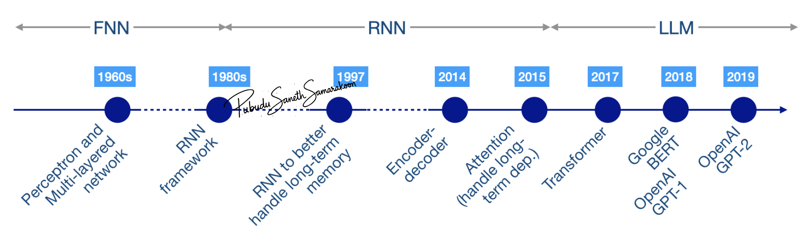
LM was introduced in early 1980s with the introduction of Recurrent Neural Networks (RNNs)
With the advances in the field of LM, more advance techniques to RNNs were introduced to
preserve gradients and maintain information (1997-2014; Gating mechanisms)
handle long-term memory (2015; Attention for RNNs)
manage variable-length input output sequences (2014; Encoder-decoder for RNNs)
Why does the LM field needs LLMs?
RNNs process inputs sequentially and the attention mechanism was not build into the core architecture
RNNs are slow and lead to scalability challenges
Transformer technology introduced in the paper “Attention Is All You Need” addressed this limitations in Modern RNNs
Transformer technology (therefore LLMs) eliminate sequential dependency:
all positions can be computed in parallel
Scalable model training and inference
LLMs
Transformer-based neural networks with large number of parameters (billions to trillions) that employ self-attention mechanisms and trained on vast amounts data (billions to trillions of tokens)
LLMs vs other ML approaches
Behavior of traditional ML approaches are specifically tied to the training objectives
LLMs exhibits capabilities that were not explicitly trained
i.e., Simple training objectives lead to complex capabilities
e.g., LLM’s ability to translate despite never being specifically trained for translation
These capabilities are referred “Emergent Behavior” of LLMs
This complexity emerges from:
Large scale + rich data + powerful architecture
Emergent mechanism is still not fully understood
Anatomy of a LLM
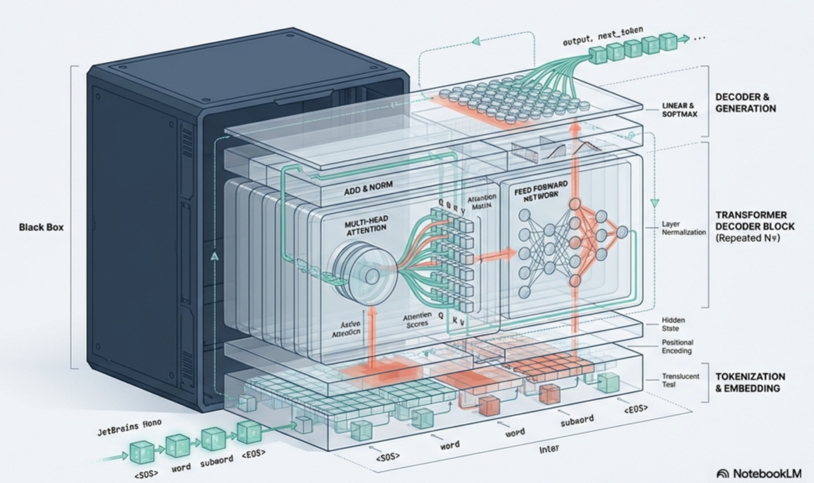
Tokenizer
Embedding layer
Transformer block
Self-attention layer
Feedforward neural network
Language modeling head (LM head)
GPT - Generative Pretrained Transformer model
Objectives
Understand what GPT is.
Explore main components (building blocks) of GPT-2 models
Generative: The model can generate tokens auto-regressive manner (generate one token at a time)
Pretrained: Trained on a large corpus of data
Transformer: The model architecture is based on the transformer, introduced in the 2017 paper “Attention is All You Need” (Self-Attention Mechanism)
GPT-2
Original publication: “Language Models are Unsupervised Multitask Learners”
GPT-2 original publication lists four models
Smallest GPT-2 model:
17 million parameters; 12 transformer blocks; Model dimensions: 768
Largest GPT-2 model:
1542 million parameters; 48 transformer blocks; Model dimensions: 1600

GPT-2 model variants and their components
Component |
Default(Small) |
Medium |
Large |
XL |
|---|---|---|---|---|
1. Tokenizer (Size of Vocabulary) |
50,257 |
50,257 |
50,257 |
50,257 |
2. Embedding layer (dimensions) |
786 |
1024 |
1280 |
1600 |
3. Transformer block |
12 layers, 12 heads |
24 layers, 16 heads |
36 layers,20 heads |
48 layers, 25 heads |
4. LM head (Output dimensions) |
50,257 |
50,257 |
50,257 |
50,257 |
Introduction to tokenization
Objectives
Explore what tokenization is and why it is important.
Understand how tokenizer process its input text
Tokenizers
What is tokenization?
Tokenizers take text as input and generate a sequence of integer representations of input text
Why it is important?
This serves as the foundation for converting text to numerical representations that deep learning models can process
Tokenizers: Text to sub-word units (tokens)
Tokenizers process these input text by converting them into discrete sub-word units
i.e, Split input test in to discrete sub-word units
These “discrete sub-word units” are tokens
Token are mapped to corresponding Token IDs using the model vocabulary
Tokenization step-by-step
Tokenizer accepts text
cat sat on theas inputSplit test into tokens:
cat,sat,on,theTokenizer split text into sub-words (tokens). In this case, sub-words from the tokenizer are equal to words in the text
Tokenizer uses model’s vocabulary as a lookup table to map tokens to token-IDs (integer IDs)
Vocabulary: A dictionary of unique tokens and unique numerical identifiers assigned to each token (Token ID)
This provides a consistent mapping system that converts variable-length text into fixed numerical representations
Return corresponding token-IDs of the tokens from input text
Vocabulary is build from training data by mapping each unique token to a token ID, with special tokens added to handle unknown words and document boundaries, enabling LLMs to process diverse text inputs effectively. The vocabulary size is managed to balance expressiveness with computational efficiency

GPT-2 tokenizer
Text to Token-IDs
from transformers import AutoTokenizer
tokenizer = AutoTokenizer.from_pretrained("gpt2")
print(f"Length of the vocabulary: {len(tokenizer)}")
sentence = "cat sat on the"
token_ids = tokenizer.encode(sentence)
print(f"Token IDs of the sentence '{sentence}': {token_ids}")
decoded_sentence = tokenizer.decode(token_ids)
print(f"Decoded sentence: {decoded_sentence}")
Text to subword units
summarization_token_ids = tokenizer.encode("summarization")
print("Token IDs for word `summarization`:", summarization_token_ids)
print("Mapping of tokens to token IDs:")
for token_id in summarization_token_ids:
print(f"'{tokenizer.decode(token_id)}' -> {token_id}")
Output
Text to Token-IDs
Length of the vocabulary: 50257
Token IDs of the sentence 'cat sat on the': [9246, 3332, 319, 262]
Decoded sentence: cat sat on the
Text to subword units
Token IDs for word `summarization`: [16345, 3876, 1634]
Mapping of tokens to token IDs:
'sum' -> 16345
'mar' -> 3876
'ization' -> 1634
Introduction to embedding
Objectives
Understand what embedding is and why it is important
Explore how embedding layers in LLMs process tokens
Token embedding
What is token embedding?
Token embedding is the process of converting discrete tokens (specifically token-IDs) into vectors
These vectors can be represented in a high-dimensional space
Token ID -> vector with length
N(points in N-dimensional space)
Representing tokens in a high-dimensional space enables to effectively capture complex patterns and relationships
What token embedding is important?
Token-IDs are just arbitrary integers assigned during tokenization that do not have mathematical relationship between these integers
Tokens are discrete numerical labels with no geometric or relational structure
Token embedding convert these numerical labels to structured representations - vectors (points in a high-dimensional space) in a way that captures the relationships between tokens
In this high-dimensional space, semantically related tokens like “dog”, “cat”, “animal” cluster together
This structure is learned during model training process so that words with similar contextual roles have similar vector representations (similarity between vectors represent relationships between tokens)
Demo
Explore token embeddings (Word2Vec embeddings):
Word2Vec embedding was widely used before the introduction of LLM technology
 Figure shows that the words with similar roles in natural language cluster together when represented in high-dimensional space
Figure shows that the words with similar roles in natural language cluster together when represented in high-dimensional space
Python implementation
import gensim.downloader as api
from sklearn.decomposition import PCA
import matplotlib.pyplot as plt
from mpl_toolkits.mplot3d import Axes3D
# Download and load the pre-trained Google News model
wv = api.load('word2vec-google-news-300')
print(f"Dimensions of 'king' embeddings: {wv['king'].shape}")
print(f"First 10 elements of 'king' embeddings: {wv['king'][:10]}")
similar_words = wv.most_similar('king', topn=3)
[print(f"{word}: {similarity:.4f}")for word, similarity in similar_words]
print(similar_words)
def get_3d_projections(word_list, wv):
# Extract embeddings for the given words
print("Word List:", word_list)
embeddings = [wv[word] for word in word_list]
# Apply PCA to reduce dimensions to 3D
pca = PCA(n_components=3)
projections = pca.fit_transform(embeddings)
return projections
def plot_3d_projections(projections, words):
fig = plt.figure(figsize=(8, 6))
ax = fig.add_subplot(111, projection='3d')
for i, word in enumerate(words):
x, y, z = projections[i]
ax.scatter(x, y, z, label=word)
ax.text(x, y, z, word, fontsize=10)
ax.set_title("3D PCA Projection of Word2Vec Embeddings")
ax.set_xlabel("PC1")
ax.set_ylabel("PC2")
ax.set_zlabel("PC3")
#plt.legend(loc='upper left')
#plt.tight_layout()
plt.show()
words = [word for word, _ in similar_words]
words.extend(["software", "internet", "web" ])
reduced_embeddings = get_3d_projections(words, wv)
plot_3d_projections(reduced_embeddings, words)
Token embeddings in LLMs
Tokenizer in GPT-2 smallest model has a vocabulary of 50257 tokens
This GPT-2 tokenizer maps tokens to integers 0-50256 with no mathematical relationship in those assignments
For example, tokenizer maps input -
cat sat on theto tokens[9246, 3332, 319, 262]that do not have inherent relationship between these numbers themselvesToken embeddings convert these arbitrary Token-IDs into dense vectors in a continuous space of 768 dimensions
Now
cat sat on thearen’t just different numbers—they’re points in a high-dimensional space where the similarity between vectors has meaningCapturing semantic meaning through token embeddings is learned during LLM pre-training process (detailed later)
GPT-2 Token embeddings: Step-by-Step Breakdown
Initiate a learnable matrix (dimensions
[vocab_size × embedding_dim])Each row represents one token’s embedding vector
Initiate the matrix with small random values (e.g., -2.84 to 1.58) to break symmetry
if all embeddings were identical, tokens couldn’t differentiate during training
As the model processes training examples, it makes predictions using these random embeddings
Prediction errors generate gradients that flow back through the network to the embedding layer
Token embeddings are optimize through backpropagation (Tokens appearing in similar contexts receive similar updates)
Through thousands of iterations in the pre-training process, random vectors evolve into meaningful representations where “cat” and “dog” cluster together
The final optimized embeddings encode semantic relationships learned entirely from the training data patterns
Explore LLM token embeddings
Embedding Dimensions:
from transformers import AutoModelForCausalLM
model = AutoModelForCausalLM.from_pretrained("gpt2",)
# Access the word token embedding layer
wte = model.transformer.wte
# Get vocabulary size and embedding dimension
print(f"Vocabulary Size: {wte.num_embeddings}; Embedding Dimension: {wte.embedding_dim}")
# The embedding matrix is stored in the 'weight' attribute
print(f"Shape of the embedding matrix: {wte.weight.shape}")
LLM Embedding of made-up words:
text_rand = "rand_xyz"
rand_token_ids = tokenizer.encode(text_rand)
print(f"Token IDs for text '{text_rand}': {rand_token_ids}")
print(f"Decoded text: {tokenizer.decode(rand_token_ids)}")
print()
# Use evaluation mode and not gradient calculation (training)
with torch.no_grad():
rand_token_embeddings = wte(torch.tensor(rand_token_ids))
print(f"Shape of the random token embeddings: {rand_token_embeddings.shape}")
print()
for i in range(len(rand_token_ids)):
print(f"Token {i}: {tokenizer.decode(rand_token_ids[i])} -> {rand_token_ids[i]};\n\tEmbeddings (first 5): {rand_token_embeddings[i][:5]}")
Output
Embedding Dimensions
Vocabulary Size: 50257; Embedding Dimension: 768
Shape of the embedding matrix: torch.Size([50257, 768])
LLM Embedding of made-up words
Token IDs for text 'rand_xyz': [25192, 62, 5431, 89]
Decoded text: rand_xyz
Shape of the random token embeddings: torch.Size([4, 768])
Token 0: rand -> 25192;
Embeddings (first 5D): tensor([-0.0456, -0.1112, 0.2527, 0.0098, -0.0464])
Token 1: _ -> 62;
Embeddings (first 5D): tensor([-0.0073, -0.0894, 0.0005, 0.0701, -0.0090])
Token 2: xy -> 5431;
Embeddings (first 5): tensor([-0.1123, -0.0957, 0.1115, -0.0743, 0.0958])
Token 3: z -> 89;
Embeddings (first 5D): tensor([-0.0141, -0.0427, 0.0941, -0.1052, 0.0594])
Position embeddings
Token embeddings process (converting unstructured token-ids to dense vectors) help capture relationships between tokens
Token embeddings process treats all positions equally
Token embedding alone makes models unable to distinguish token order without position information
Unable to distinguish between “dog bites man” and “man bites dog”
Position embeddings injects position information to embedding vectors
Embedding layer of LLMs
Token embeddings convert discrete token IDs into vector representations through a learnable matrix
Positional embeddings added to inject sequence order information to LLM embeddings
Embedding vectors (combined token and position embeddings) are parses to the next layer of the LLM - transformer layer/block

Source: transformer-explainer
Demo
Token and position embeddings:
Steps in the following script:
Tokenize input text
bank is near the river bankPass input to token and position embeddings
Calculate the similarity between 1st and last token
import torch
text_1 = "bank is near the river bank"
token_ids = tokenizer.encode(text_1)
for i in range(0,len(token_ids)):
print(f"Token {i}: {tokenizer.decode(token_ids[i])} -> {token_ids[i]}")
wte = model.transformer.wte # Token embedding
wpe = model.transformer.wpe # Position embedding
bank_1_id = token_ids[0]
wte_bank_1 = wte(torch.tensor(bank_1_id))
wpe_bank_1 = wpe(torch.tensor(0))
bank_2_id = token_ids[-1]
wte_bank_2 = wte(torch.tensor(bank_2_id))
wpe_bank_2 = wpe(torch.tensor(1))
cosine_sim = torch.nn.functional.cosine_similarity(
wte_bank_1 + wpe_bank_1,
wte_bank_2 + wpe_bank_2,
dim=0
)
print(f"Similarity: {cosine_sim.item():<.4f}") # Less than 1.0 - they're different!
The contextualization happens through the Transformer layers of the LLM by updating vector embeddings
Transformer update vectors from embedding layer to reflect the attention patterns that capture semantic relationships like “river” → “bank” (as in riverbank)
Output
LLM Embedding
## Notice the token 0 - "bank" and " bank" (with leading space)
Token 0: bank -> 17796
Token 1: is -> 318
Token 2: near -> 1474
Token 3: the -> 262
Token 4: river -> 7850
Token 5: bank -> 3331
Similarity: 0.5472
Transformer blocks
Objectives
Gain a basic understanding of Transformer technology and why it is important.
Explore transformer block and its main components
Limitations in traditional LM
RNN based traditional LM failed to track long-range dependencies like understanding how a word at the start of a paragraph relates to one at the end
RNN based models that processed words one by one (not scalable)
Ambiguity Resolution: Can’t differentiate specific linguistic problems like determining what “it” refers to in several sentences
Transformer technology
Transformer technology was introduced in the paper “Attention Is All You Need” to address several limitations in RNN based language modeling (LM)
Limitations and solutions
Limitation |
Solution |
|---|---|
Long-range dependencies |
Contextual Understanding via self-attention mechanism |
not scalable |
Parallel Processing of tokens |
specific linguistic problems |
Ambiguity Resolution via self-attention mechanism |
Why Is Transformer technology important?
Scalability:
Allows for massive scaling (in terms of parameters and training data size)
Leading to the “Large” in LLMs.
Architectural versatility:
The same underlying transformer block architecture is used across various state-of-the-art models (like GPT, Llama, and BERT)
Versatility performance/behaviour:
Enables models to generate coherent, contextually appropriate text and perform a wide range of tasks—from translation to coding—that were previously impossible for computers
Effective for both understanding and generating human language
Transformer model
Encoder and Decoder architecture
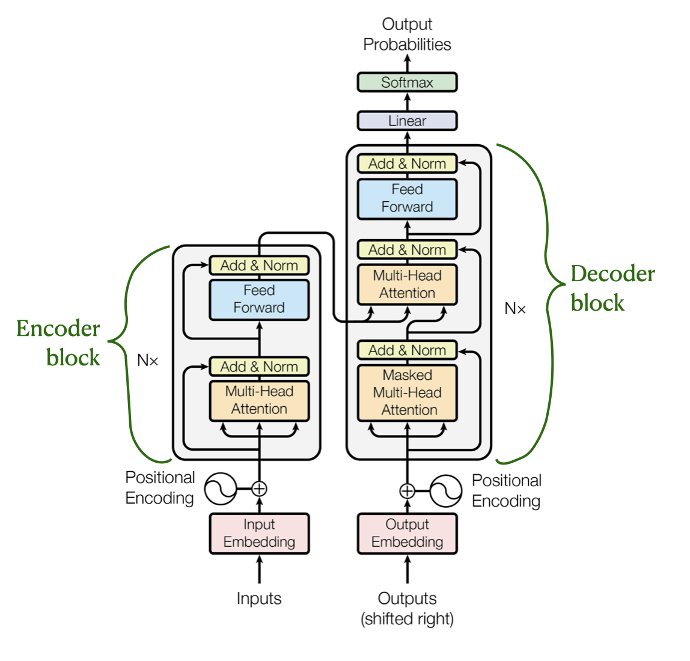
Originally developed specifically for machine translation
Encoder reads the source sentence (it) and encode it capturing full context
Decoder use encoded context and generate output one token at a time
Main characteristics of the original Transformer architecture:
Dual Submodules
Encoder and Decoder
Contextual Encoding
Capture the full context and meaning of the entire input text
Sequential Generation
Decoder takes these encoded vectors as input and generates the final output one token at a time
Using the encoder’s information to guide predictions
Self-Attention Layers
Both the encoder and decoder use self-attention mechanisms to capture long-range dependencies
Wide adaption of decoder transformers
Models like GPT (Generative Pretrained Transformer) discarded the encoder to focus solely on the decoder
Decoder models are autoregressive - feed their own previous outputs back in as inputs
This design is allows the model to write coherent, naturally optimized for text generation
Generate continuous text—from poetry to code—by predicting one token at a time
Warning
This lesson only focusses on the decoder transformers:
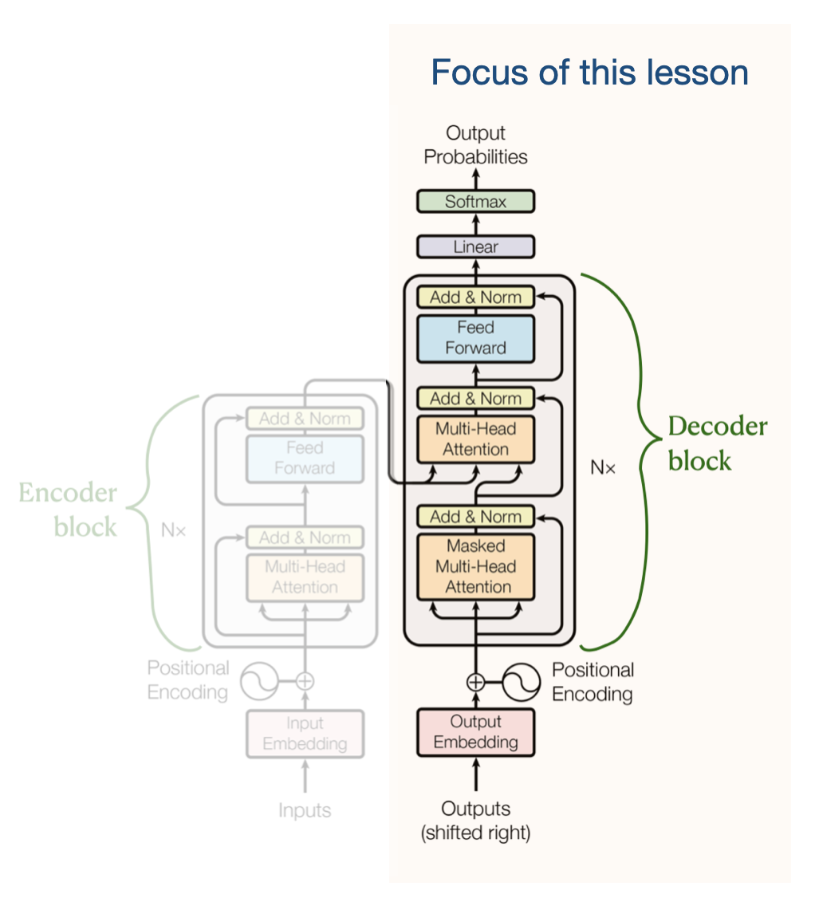
Danger
“Transformer” refer to the “Decoder” from this point onwards (in this lesson)
What is a Transformer block?
Transformer block is the fundamental architectural unit of a LLMs
LLMs - constructed by stacking these blocks on top of one another
Each block processes the input it receives from the previous layer and passes the result to the next
Stacked transformer blocks progressively refining the model’s understanding of the text
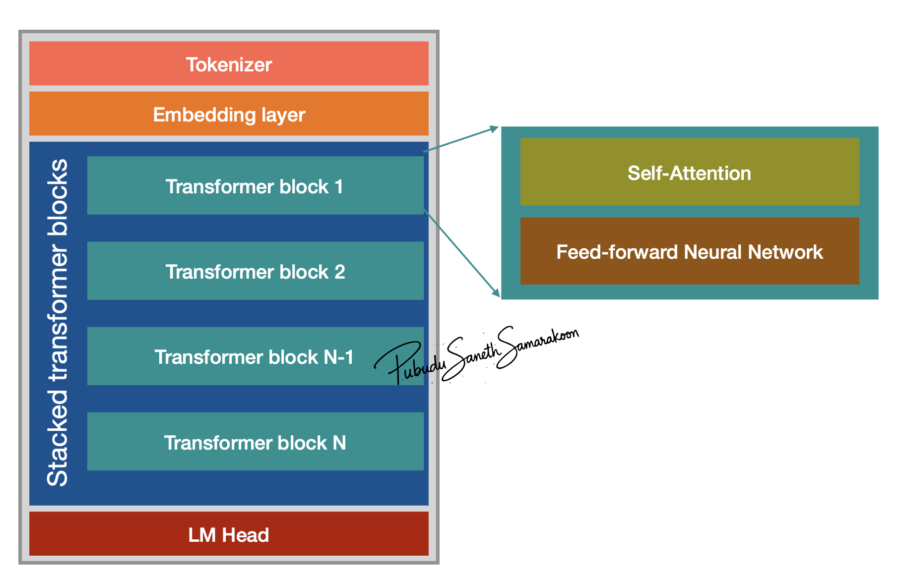
Main Components of a transformer block
Attention mechanism
Feed Forward neural Network
Warning
Following concepts on transformer are not discussed in this lesson
Normalisation
Layer normalisation
Root Mean Square Layer Normalization
Pre-LayerNorm or Post-LayerNorm
Residual connections
Self-attention mechanism
Objectives
Gain a basic understanding of self-attention mechanism
Explore how attention weights are calculated & how context vector is generated.
What is self-attention mechanism?
Self-attention: create a new, enriched representation (context vector) by incorporating information from all token embeddings in the sequence
Two main steps mechanism:
Scoring relevance (“attending to”/”considering” all tokens) & calculate attention weights (relevance scores)
Combine attention weights and generate context vector (new enriched representation)
Context vector (context-aware representation / enriched representation):
Captures the specific meaning of a token embeddings within its surrounding embeddings
Allow the model to understand relationships and dependencies between words, regardless of how far apart they are in the sentence
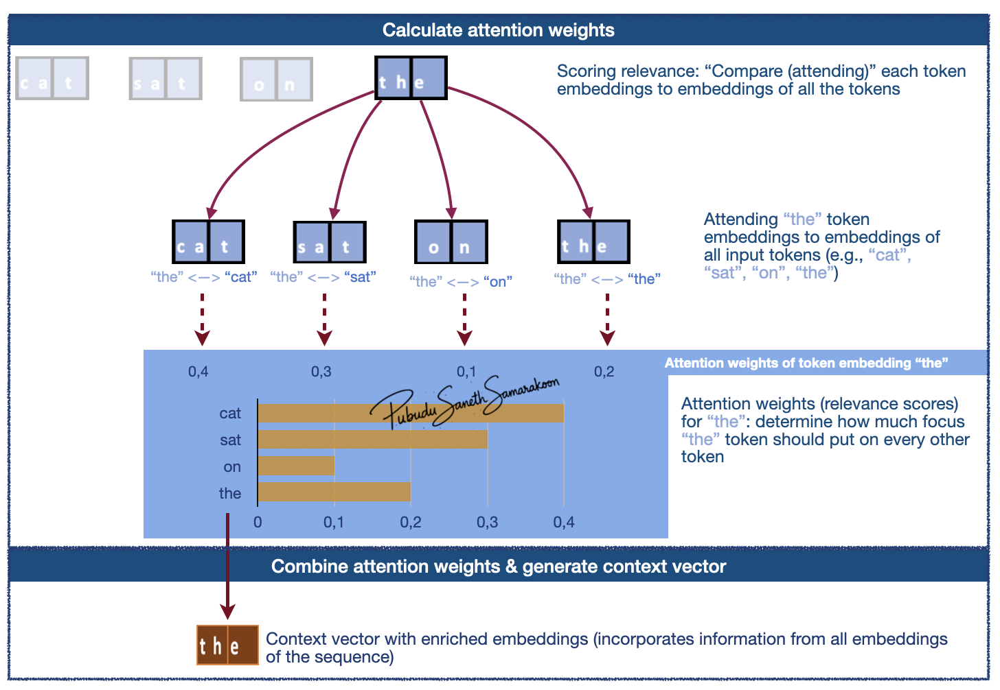
Understanding self-attention with Q, K, V weight matrix
Overview of self-attention with Q, K, V weight matrix
Note
Key concepts of attention mechanism
Q (Query), K (Key) and V (Value) roles input token embeddings play in attention mechanism
Q, K, V projection via learnable projection matrices (\(W_{k}\), \(W_{q}\), \(W_{v}\))
Attention scores and Attention weights
Context vectors
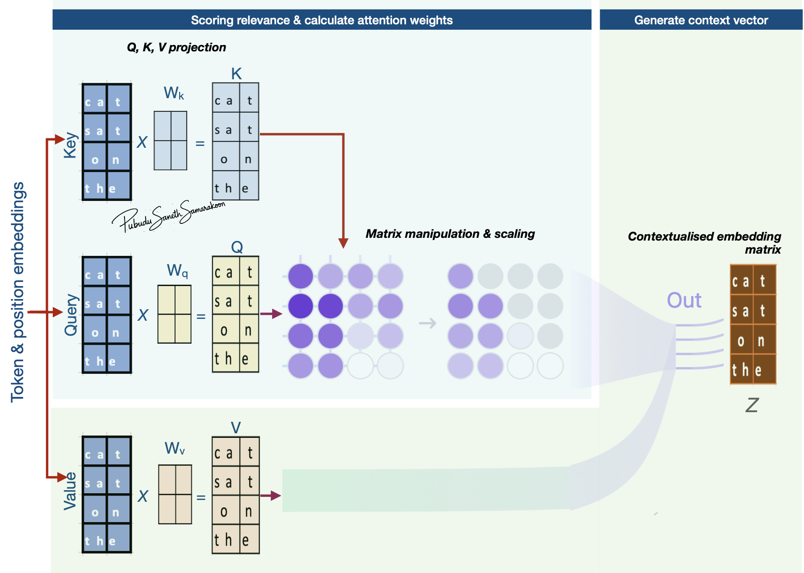
Source (modified): transformer-explainerQueries (Q), Keys (K), and Values (V)
Three roles of input token embeddings: Queries (Q), Keys (K), and Values (V):
Input token embeddings play three distinct roles in the attention mechanism
Queries (Q) “attend” to other vectors in the input sequence and serve as starting points to generate context vectors
Keys (K) gets compared to (matched with) Queries (Q) when calculating attention scores (relevance scores)
Values (V) serve as “reference values” that summarize scores from all-vs-all Q and K matching
Q, K, V projection:
First step in attention mechanism is to project Q, K, V embeddings to \(𝑄_{𝑚𝑎𝑡𝑟𝑖𝑥}\), \(K_{𝑚𝑎𝑡𝑟𝑖𝑥}\) and \(V_{𝑚𝑎𝑡𝑟𝑖𝑥}\) representations via a learnable projection matrices
\(𝑄_{𝑚𝑎𝑡𝑟𝑖𝑥}\): Vectors that “attend” to other vectors in the input sequence. (Actual vectors that are used as queries for the “comparison / attention”)
\(𝐾_{𝑚𝑎𝑡𝑟𝑖𝑥}\): Vectors that get compared to queries
\(V_{𝑚𝑎𝑡𝑟𝑖𝑥}\): Vectors that are used to combine values from previous step and generate context vector
\(𝑄_{𝑚𝑎𝑡𝑟𝑖𝑥}\), \(K_{𝑚𝑎𝑡𝑟𝑖𝑥}\) and \(V_{𝑚𝑎𝑡𝑟𝑖𝑥}\) have similar dimensions to Q, K, V embeddings, but the values in these matrices can get updated during the model training (due to the learnable projection matrices: \(W_{q}\), \(W_{k}\) and \(W_{v}\))
Learnable projection matrices: \(W_{q}\), \(W_{k}\) and \(W_{v}\)
Without these projection matrices, the relationship between embeddings would be static
The learnable matrices ensure that the attention mechanism is dynamic and allows \(𝑄_{𝑚𝑎𝑡𝑟𝑖𝑥}\), \(K_{𝑚𝑎𝑡𝑟𝑖𝑥}\) and \(V_{𝑚𝑎𝑡𝑟𝑖𝑥}\) get updated in model training
Allow the model to learn how to interpret embeddings differently depending on their context in the input sequence
Learnability allow the model to discover and optimize complex linguistic patterns during training
Attention weights:
Attention weights are calculated by:
Multiplies the Query vectors by the all the Key vectors in the sequence
Scale these scores
Convert scaled scores to probabilities
These probabilities (attention weights) help model determine how much focus the current token should put on other tokens
Context vector
Once attention weights are calculated, the model uses them to aggregate information.
The result is a new, enriched vectors that contain context from the relevant parts of the sequence
Understanding attention equation (scaled Dot-Product Attention)
Attention scores: (\({QK^T}\))
Attention weights: \(softmax(\frac{QK^T}{\sqrt{d_k}})\)
Context vector calculation: \(softmax(\frac{QK^T}{\sqrt{d_k}})*V\)
Attention weights calculation: \(softmax(\frac{QK^T}{\sqrt{d_k}})\)
Three stage Attention weights calculation process:
Stages 1: Calculate attention score with
dot product(\({QK^T}\))Stage 2: Scaling (\(\frac{QK^T}{\sqrt{d_k}}\))
Stage 3: Calculate “Attention weights” (\(softmax(\frac{QK^T}{\sqrt{d_k}})\))
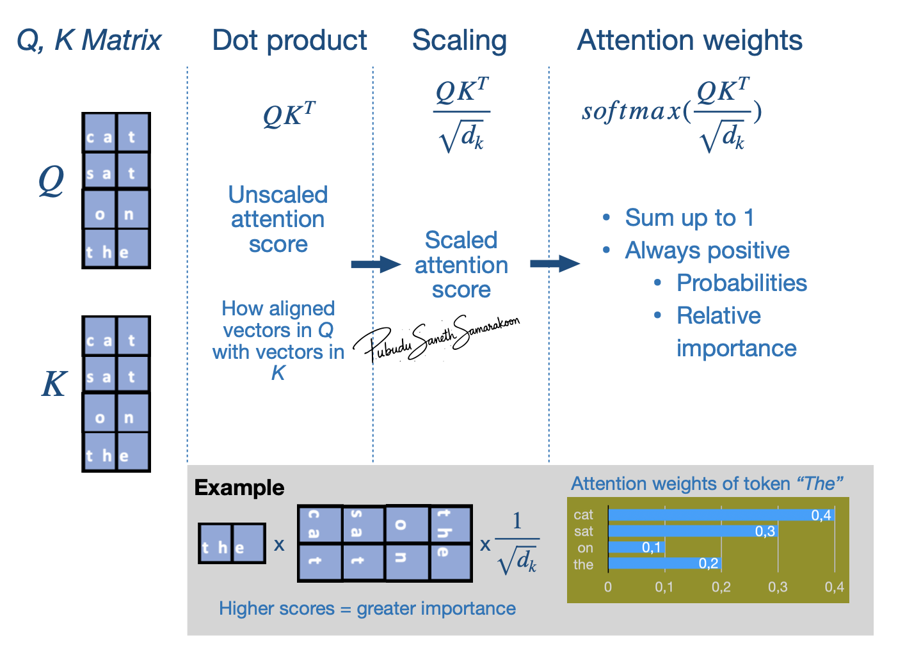
Stages 1: Calculate attention score with dot product (\({QK^T}\)):
Provides unscaled attention score (initial relevance scores) - A higher dot product means the two tokens are more aligned (similar context)
Indicates how aligned vectors in \(𝑄_{𝑚𝑎𝑡𝑟𝑖𝑥}\) with vectors in \(𝐾_{𝑚𝑎𝑡𝑟𝑖𝑥}\)
i.e., how much focus \(𝑄_{𝑚𝑎𝑡𝑟𝑖𝑥}\) vectors should put on \(𝐾_{𝑚𝑎𝑡𝑟𝑖𝑥}\) vectors
Matrix manipulation enables simultaneously compare all the vectors in \(𝑄_{𝑚𝑎𝑡𝑟𝑖𝑥}\) to \(𝐾_{𝑚𝑎𝑡𝑟𝑖𝑥}\)
Stage 2: Scaling (\(\frac{QK^T}{\sqrt{d_k}}\)):
Scaled attention scores
Help avoid high-values in attention score and stabilize gradients
Stage 3: Calculate “Attention weights” (\(softmax(\frac{QK^T}{\sqrt{d_k}})\)):
Apply
softmaxfunction to scaled attention scores and calculate “Attention weights”softmaxfunction makes values to be positive and sums up 1 (convert to probabilities)i.e., Convert attention scores to attention weights (probabilities) what shows “relative importance” \(𝑄_{𝑚𝑎𝑡𝑟𝑖𝑥}\) vectors put on \(𝐾_{𝑚𝑎𝑡𝑟𝑖𝑥}\) vectors
Main Stages: \(softmax(\frac{QK^T}{\sqrt{d_k}})*V\)
Multiply these attention weights by the Value vectors (\(V_{𝑚𝑎𝑡𝑟𝑖𝑥}\)) and produce final context vector
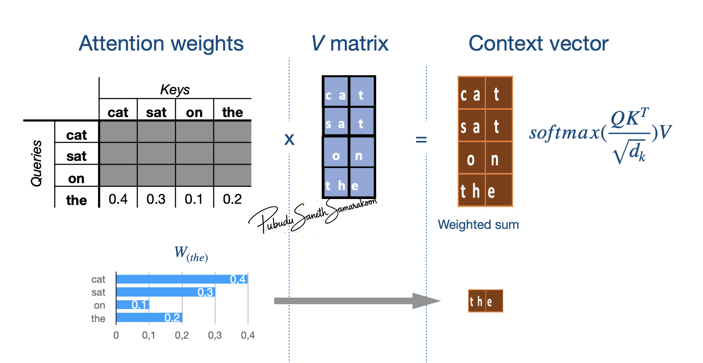
\(𝑊_{𝑡ℎ𝑒}\): To what extent token “the” attend to (focus on) each input token (attention weights)
\(𝑉_{𝑚𝑎𝑡𝑟𝑖𝑥}\): Representation of input token embedding matrix
Masked Attention
Objectives
Understand what masked Self-Attention is and how it is applied
What is Masked Self-Attention?
Mechanism specific to the decoder blocks of a Transformer (like GPT).
Restricts the model’s to “only pay attention to previous token embeddings” when it is processing a specific token in the sequence
Masks model’s ability to pay to any future token embeddings
Why is it Important?
Without mask |
With mask |
|
|---|---|---|
Attention mechanism |
Exposed to future tokens |
Not exposed to future tokens |
Training & Inference |
Attend to future tokens |
Predict future tokens |
Prevents “Cheating” During Training
During training, model should learn how to predict the next token without “peeking” into the future
Masked attention ensures the model relies solely on the past to predict the future
Autoregressive text generation
Key to enable sequential generation autoregressive text generation (predicting the next word)
Forces the model to generate text one token at a time without peaking into the future tokens (model predicts the next word based only on past context)
Autoregressive text generation continues by feeding the output of one step as the input for the next, which is essential for creating coherent sentences.
Masking during the attention mechanism
When is the mask applied?
Mask is applied to scaled attention scores
Masked attention scores are used in the Softmax function
Ensure that the scaled attention scores sums to 1 over a restricted set of tokens
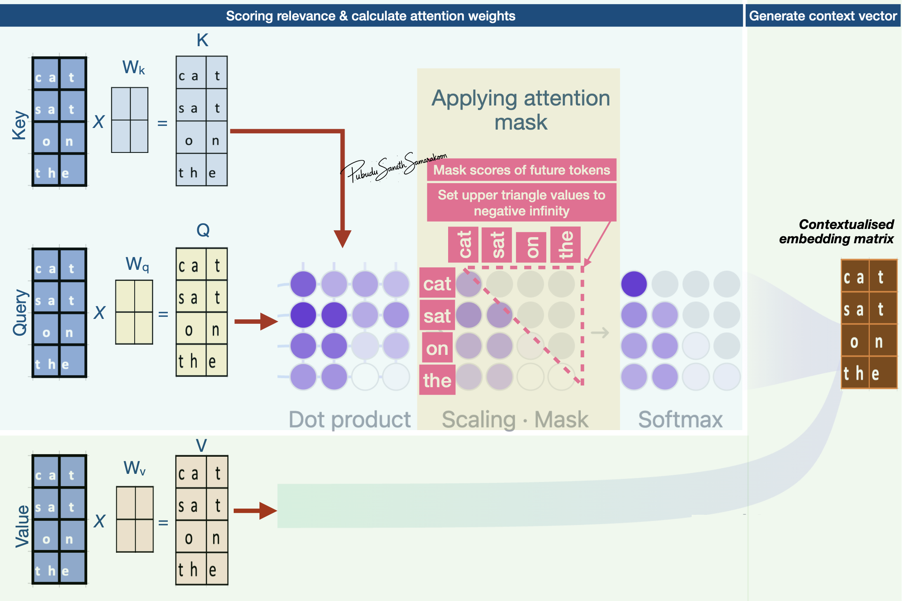
How to apply attention mask?
Mask: Set upper triangle values of the attention matrix to negative infinity
\(softmax(\frac{QK^T}{\sqrt{d_k}} + M)*V\)
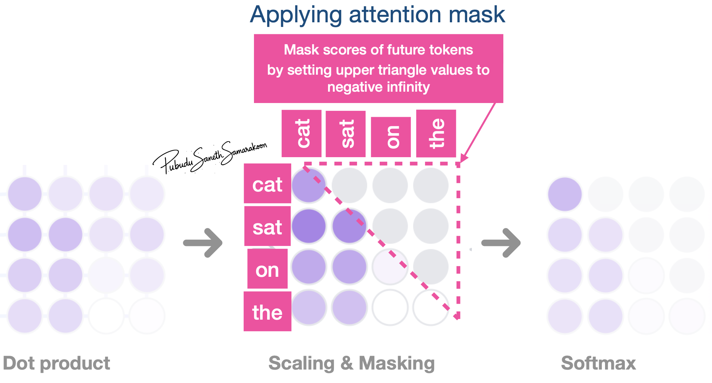
Important
Causal Attention (Causal Masking)
In decoder transformer models like GPT:
Setting upper triangle values of the attention matrix to negative infinity is referred as Causal Attention (Causal Masking)
Causal Attention describes the behavioral constraint
Model must be causal, i.e., respect the sequence of tokens as they appear in time
Masked Attention describes the technical implementation
Model uses a mathematical mask (upper triangle of matrix with negative infinity)
Warning
Masking is a broader term
“Mask” can be applied to tokens for reasons unrelated to causality
Padding Masks:
Ignoring filler words (Used to ignore ‘[PAD]’ tokens)
Used in both encoder and decoder transformers
Masked Language Modeling:
Models like BERT use “Masked Language Modeling” to hide random words in the middle of a sentence to force the model to guess them
Masking process: Replace a small percentage (e.g., 15%) of input tokens with a special [MASK] token
Objective: To teach the model to understand the relationship between words by “filling in the blanks”
Multi-head self-attention
Objectives
Understand what Multi-head self-attention is and why it is important
Explore how it implemented in a transformer block
What is Multi-head attention
Multi-head attention divides the attention process into multiple independent parallel instances
Each parallel processes is called an “attention head”
Extend attention mechanism to multiple parallel processes
Why is it important?
Independent parallel attention heads allow the model to focus on different aspects of the input simultaneously
Help model recognize more intricate and nuanced patterns in the text than a single-head attention mechanism
E.g., One head might capture grammatical structure while another captures semantic meaning
Multi-head attention mechanism
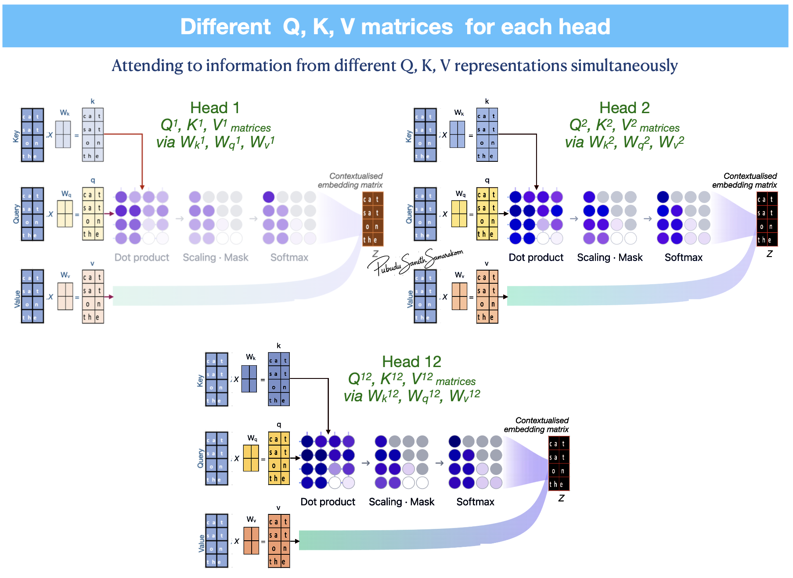
Independent Projections using multiple sets of learnable weight matrices (\(W_{q}\), \(W_{k}\), \(W_{v}\)) creates distinct Query, Key, and Value matrices for each head
Each head executes attention mechanism in parallel generate multiple context vectors
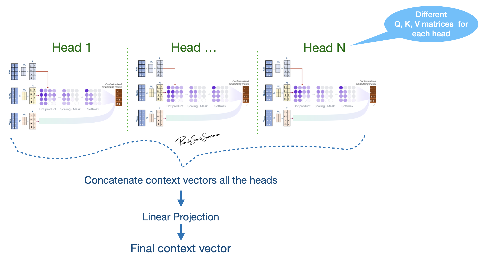
Concatenation:
The output vectors from all the parallel heads are joined (concatenated) together to form a single, longer vector
Final Linear Projection:
Combine the information from all heads into the final output dimension required by the next layer
Note
In efficient implementations, rather than literally stacking separate layers, Multi-head attention is often achieved by projecting the input into a large dimension and then mathematically “splitting” it into heads for processing
Feedforward neural network (FNN)
Objectives
Understand the role of FNN in a transformer block and why it is important
Basic (simplest) overview
What is a single neuron?
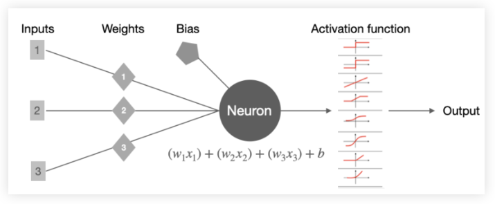
Inputs: Always numerical, can have many inputs, often normalized
Weights: Numerical values associated with each input, determine importance
Bias: Provides flexibility for the neuron to activate even if all inputs are zero
What is a FNN?
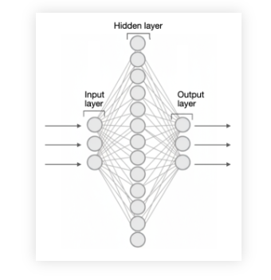
Input layer: Receives the inputs, a neuron in a input layer represents a single input feature
Hidden layers: process the input data and extract complex features
Output layer: Produces the network’s prediction or output
FNN in the transformer block
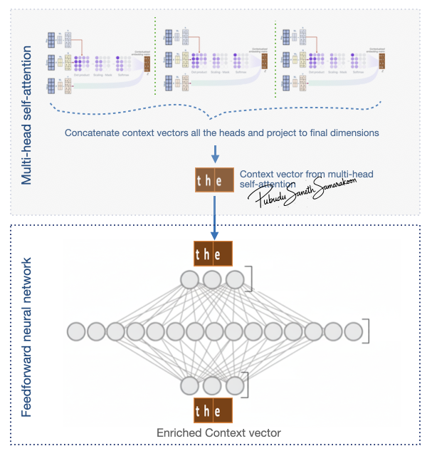
FNN in the transformer block accepts context vector from the attention layer as the input
FNN expands this input into a much higher-dimensional space (often 4 times the size)
Explore each context vector in a richer representation space
i.e., Uncompresses the information within each context vector
Compressing it back down to model dimensions and generate enriched context vector
Why FNN is important?
Perform complex calculations and feature extraction on each token individually in a richer representation space
Capture more nuanced and rich feature representations within each context vector
Attention mechanism figures out where to look (routing information between words), the feed-forward network figures out what the words actually mean
Main features
FNN contains significantly more trainable weights (parameters) than the self-attention layer
Account for the bulk of the model’s storage
Stores the generalized patterns the model learned during training
Acting as the main engine for computation within each transformer block
Language Modeling Head (LM Head)
Objectives
Understand what a LM head is
Explore how LM head help predict the next token
What is LM head?
LM head projects the Context vector of the last token from the final block into the size of the model’s vocabulary and calculates a probability score for every possible next token
Enable next token prediction
Why LM head is important?
LM head is final component of a Transformer model, specifically in a LLM like GPT
Connects the output of the final Transformer block to the model’s vocabulary & help predict the next token
How is the LM head help predict next token
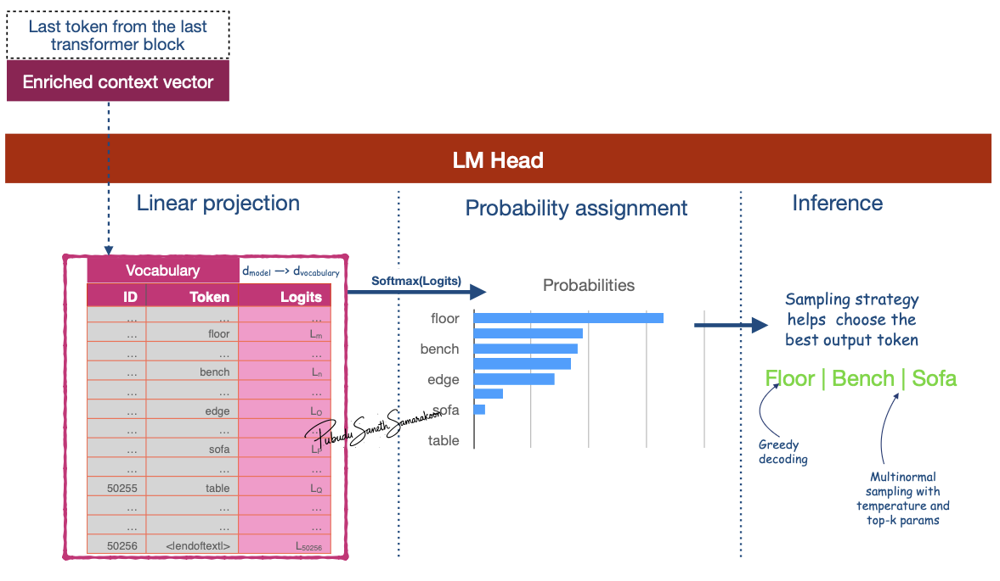
Input: Receives the “output vector” from the last Transformer block
E.g., if the model uses an embedding size of 3,072, the LM head takes in a vector of size 3,072 for each token.
Maps this input vector to a much larger vector equal to the size of the model’s vocabulary (e.g., 50,257 for GPT-2)
These outputs are raw, unnormalized scores called
logits
Convert
logitsto probability scores via softmax functionEmploy a sampling strategy to select the next token prediction
Coding
Custom LM-head
Steps:
Get Logits from the Language Modeling Head
Implement Temperature Scaling
Implement Top-K Sampling
Extract probabilities for Top-K
def lm_head(model, last_token_context_vector, temperature=0.7, k=50):
# Get Logits from the Language Modeling Head
## Project matrix for d_model (model dimension) to d_vocabulary (vocabulary dimensions)
lm_head = model.get_output_embeddings()
## Project last_token_context_vector and extract logits
logits = lm_head(last_token_context_vector)
# Implement Temperature Scaling
# Lower temp -> more confident, less random. Higher temp -> more random, creative.
scaled_logits = logits / temperature
# Implement Top-K Sampling
# We limit the sampling pool to the top 'k' most likely tokens
top_k_logits, top_k_indices = torch.topk(scaled_logits, k)
# Create a new tensor filled with a very low value (-inf)
filtered_logits = torch.full_like(logits, -float("Inf"))
# Scatter the top-k logits back into the new tensor at their original positions (Scatter the values along dimension 1)
filtered_logits.scatter_(0, top_k_indices, top_k_logits)
# Convert the filtered logits into a probability distribution
probabilities = F.softmax(filtered_logits, dim=-1)
return probabilities
Steps:
Decoding via multinomial sampling method to get the next token prediction
## Select top-n tokens from the probabilities calculated in the LM-head
def get_top_token(probabilities, tokenizer, top_n=1):
# Sample one token from the final probability distribution
# torch.multinomial is used for sampling from a discrete probability distribution.
final_token_id = torch.multinomial(probabilities, num_samples=top_n)
# Decode the selected token ID(s) to get the final word
final_token = tokenizer.decode(final_token_id.tolist())
print(f"\n✅ Final Selected {top_n} Tokens: '{final_token}'")
return final_token
Note
Functions
lm_headandget_top_tokenused in GPT-2 pre-trained end to end exercise
Pre-trained GPT-2 model end to end
Objective
Explore Pre-trained GPT-2
Run input text - “cat sat on the” through Pre-trained GPT-2 and extract next token predictions
Load Pre-trained GTP-2 model
from collections import OrderedDict
from transformers import AutoModelForCausalLM, AutoTokenizer, pipeline
import torch
import torch.nn.functional as F
/opt/hostedtoolcache/Python/3.11.15/x64/lib/python3.11/site-packages/tqdm/auto.py:21: TqdmWarning: IProgress not found. Please update jupyter and ipywidgets. See https://ipywidgets.readthedocs.io/en/stable/user_install.html
from .autonotebook import tqdm as notebook_tqdm
%%capture
# Load pre-trained model and tokenizer
model_name = "gpt2"
# Load the tokenizer and model
tokenizer = AutoTokenizer.from_pretrained(model_name)
# Load the model
model = AutoModelForCausalLM.from_pretrained(model_name)
# Force model to use CPU
model = model.to("cpu")
# Set the model to evaluation mode
model.eval()
## Disable Dropout layers to ensure deterministic outputs
Warning: You are sending unauthenticated requests to the HF Hub. Please set a HF_TOKEN to enable higher rate limits and faster downloads.
print("Model and tokenizer loaded successfully.")
print(f"Model: {model}")
Model and tokenizer loaded successfully.
Model: GPT2LMHeadModel(
(transformer): GPT2Model(
(wte): Embedding(50257, 768)
(wpe): Embedding(1024, 768)
(drop): Dropout(p=0.1, inplace=False)
(h): ModuleList(
(0-11): 12 x GPT2Block(
(ln_1): LayerNorm((768,), eps=1e-05, elementwise_affine=True, bias=True)
(attn): GPT2Attention(
(c_attn): Conv1D(nf=2304, nx=768)
(c_proj): Conv1D(nf=768, nx=768)
(attn_dropout): Dropout(p=0.1, inplace=False)
(resid_dropout): Dropout(p=0.1, inplace=False)
)
(ln_2): LayerNorm((768,), eps=1e-05, elementwise_affine=True, bias=True)
(mlp): GPT2MLP(
(c_fc): Conv1D(nf=3072, nx=768)
(c_proj): Conv1D(nf=768, nx=3072)
(act): NewGELUActivation()
(dropout): Dropout(p=0.1, inplace=False)
)
)
)
(ln_f): LayerNorm((768,), eps=1e-05, elementwise_affine=True, bias=True)
)
(lm_head): Linear(in_features=768, out_features=50257, bias=False)
)
Set custom LM-head
Extract logits
Apply temperature and k-top sampling
Select final token predictions
def lm_head(model, last_token_context_vector, temperature=0.7, k=50):
# 1. Get Logits from the Language Modeling Head
lm_head = model.get_output_embeddings() #model.lm_head
logits = lm_head(last_token_context_vector)
# Implement Temperature Scaling
# Lower temp -> more confident, less random. Higher temp -> more random, creative.
scaled_logits = logits / temperature
# Implement Top-K Sampling
# We limit the sampling pool to the top 'k' most likely tokens
top_k_logits, top_k_indices = torch.topk(scaled_logits, k)
# Create a new tensor filled with a very low value (-inf)
filtered_logits = torch.full_like(logits, -float("Inf"))
# Scatter the top-k logits back into the new tensor at their original positions (Scatter the values along dimension 1)
filtered_logits.scatter_(0, top_k_indices, top_k_logits)
# Convert the filtered logits into a probability distribution
probabilities = F.softmax(filtered_logits, dim=-1)
return probabilities
## Select top-n tokens from the probabilities calculated in the LM-head
def get_top_token(probabilities, tokenizer, top_n=1):
# Sample one token from the final probability distribution
# torch.multinomial is used for sampling from a discrete probability distribution.
final_token_id = torch.multinomial(probabilities, num_samples=top_n)
# Decode the selected token ID(s) to get the final word
final_token = tokenizer.decode(final_token_id.tolist())
print(f"\n✅ Final Selected {top_n} Tokens: '{final_token}'")
return final_token
Run experiment
Run custom LM-head and extract top 5 predictions
input_text = "cat sat on the"
# Tokenize input text
input_ids = tokenizer(input_text, return_tensors="pt").input_ids
print(f"Input prompt: '{input_text}'")
all_token_hidden_states = get_all_hidden_states(model, input_ids)
last_token_rep = all_token_hidden_states[0][-1, -1, :]
probabilities = lm_head(model, last_token_rep)
top_tokens = get_top_token(probabilities, tokenizer, top_n=5)
Input prompt: 'cat sat on the'
Number of hidden state layers: 2
✅ Final Selected 5 Tokens: ' bed grass bench floor deck'
Next token prediction (via LM-head defined in the model)
with torch.no_grad():
outputs = model(input_ids)
print(f"\nModel Output length: {len(outputs)}")
print(f"\nModel Output Keys: {outputs.keys()}")
print(f"\nModel Output Logits Shape: {outputs.logits.shape}")
print(f"\nModel Output last token Logits Shape: {outputs.logits[-1, -1, :].shape}")
Model Output length: 2
Model Output Keys: odict_keys(['logits', 'past_key_values'])
Model Output Logits Shape: torch.Size([1, 4, 50257])
Model Output last token Logits Shape: torch.Size([50257])
# Get the logits for the last token position
next_token_logits = outputs.logits[-1, -1, :]
# Convert logits to probabilities
probs = torch.softmax(next_token_logits, dim=-1)
# Get the most probable next token
predicted_token_id = torch.argmax(probs).item()
predicted_token = tokenizer.decode([predicted_token_id])
print(f"Next token prediction (from default lm-head): '{predicted_token}'")
Next token prediction (from default lm-head): ' floor'
Dataflow across LLM
Objectives
Explore the data-flow and data parallelization in a LLM
Dataflow across the LLM
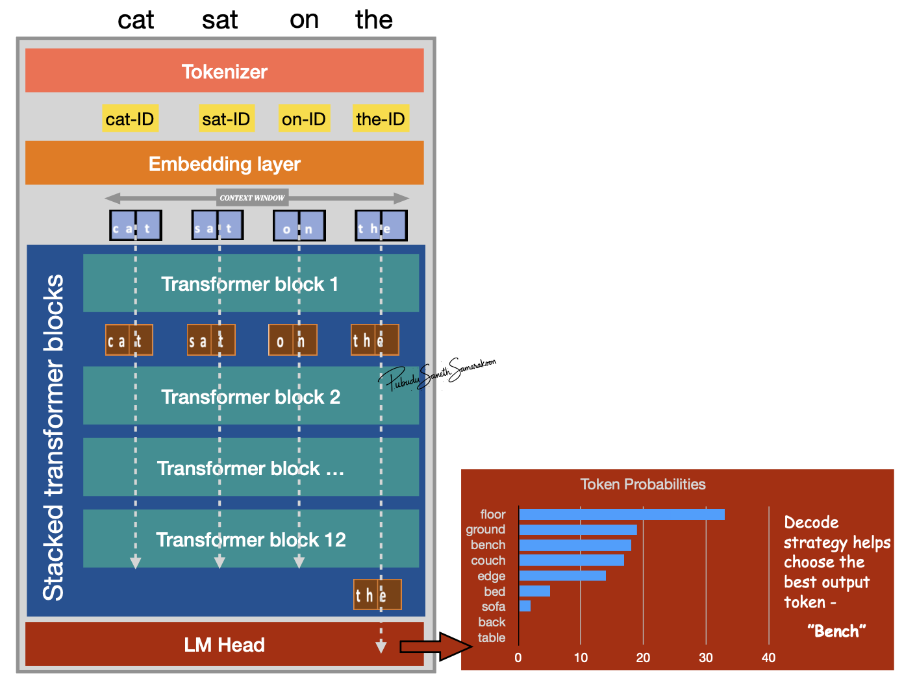
Single forward pass through LLM:
Tokenizer process input text to sub-word units represented in token-IDs (integers)
Embedding layer convert token-IDs into vectors (embeddings)
Stack of transformer blocks for sequential transformation and enriching context of all tokens
LM head: for probability calculation and next token prediction
Context Window
The maximum number of token the model can handle simultaneously in a single forward pass
Note
Dataflow Constraint: As the autoregressive loop adds more tokens, if the sequence length exceeds this window, the model must truncate or “forget” the earliest tokens, meaning they no longer contribute to the calculation of future predictions.
Autoregressive Loop: The model selects the next token based on these probabilities (decoding), appends it to the original input sequence, and feeds this new, longer sequence back into the start of the model to generate the subsequent token.
Data parallelization in LLM
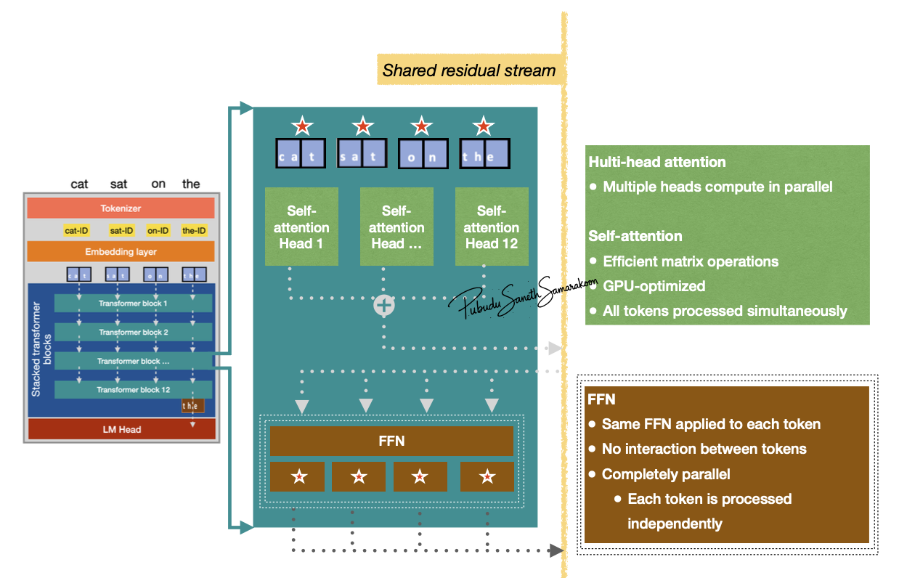
Reference
Book “Build a Large Language Model (From Scratch)”, Sebastian Raschka

Hands-On Large Language Models, Jay Alammar, Maarten Grootendorst
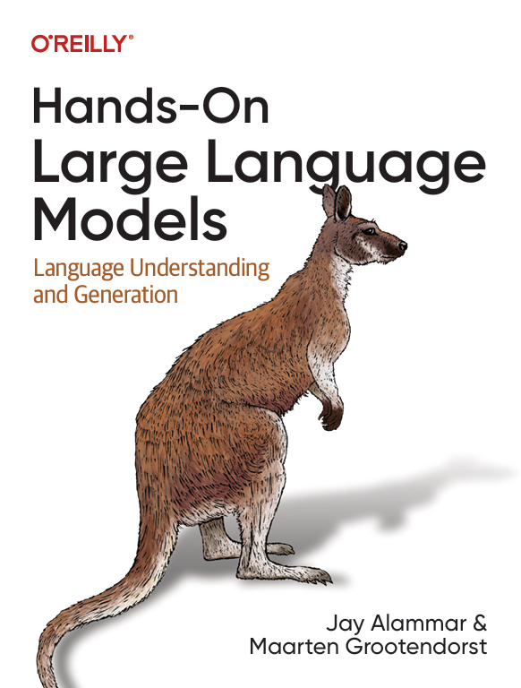
Introduction - Architecting Autonomous Systems
Introduction
These lesson notes are designed to introduce the following concepts
Mechanics of Agency & Intelligence
Anatomy of AI agents
AI agent terminology
Objectives
Gain a basic overview of concepts associated with the mechanics of agency and intelligence
Understand the anatomy of AI agents (what AI agents are and their main components)
Understand the anatomy of AI agents (what AI agents are and what their main components are)
Explore code-bases (Python based AI agent examples)
Here, learners will gain knowledge to help them interpret the concepts, processes, and components that make AI agents work.
Prerequisites
Prerequisites
Basic understanding of LLMs (see Building Blocks of GPT-2 LLM)
Python programming
Lesson notes (content)
Fundamentals of Autonomous Systems
Tools, Interoperability, and the Model Context Protocol (MCP)
Context Engineering for Stateful AI Agents; Sessions, Persistent Memory and context injection
Explore Python code snippets demonstrating a range of concepts
Case study part 1: Explore Anatomy and Taxonomy of Agents
Case study part 2: Explore basics of context engineering
Engineering Trust
Target audience
These lesson notes are for individuals who need to explore fundamental concepts associated with AI agents. These notes are not designed to demonstrate how to develop and deploy production-ready AI agents.
Credits
GitHub pages are built using the CodeRefinery Sphinx lesson template
Figures are generated using the Google NotebookLM (NotebookLM slides)
References
Anatomy and Taxonomy of Agents
Objectives
Understand what AI agents are and their main components
Explore Mechanics of Agency and core anatomy of agents
Gain basic overview of Agent Ops concepts
References
The Paradigm Shift: From Predictive AI to Autonomous Agents

We are moving beyond “Predictive AI”—systems that operate in a passive, discrete paradigm to translate text or generate images—toward “Autonomous Agents”
This shift represents a move from the traditional “bricklayer” development model, where engineers define every logical step via explicit code, to a “director” model
In this new era, the developer orchestrates an autonomous “actor” by
setting the scene through guiding instructions
selecting a cast of specialized tools, and
curating the necessary context to achieve high-level goals
Model-Centric vs. Agentic-Centric
Feature |
Model-Centric (Passive AI) |
Agentic-Centric (AI Agents) |
|---|---|---|
Autonomy |
Requires human direction for every discrete step. |
Capable of autonomous planning and multi-step execution. |
Task Handling |
Static workflows; input-to-output mapping. |
Complex, goal-oriented missions with dynamic adaptation. |
Execution Loop |
Linear (Input → Model → Output). |
Cyclical (Think → Act → Observe). |
Interaction |
Predictive or creative content generation. |
Practical agency; the ability to change the state of the world via tools. |
Defining the Agent
An agent is not merely a model
it is the natural evolution of Language Models (LMs) synthesized into functional software
Core components of an agent
The Model (The Brain)
The reasoning engine that processes information and makes decisions.
Tools (The Hands):
Interfaces (APIs, data stores) that connect reasoning to reality.
The Orchestration Layer (The Nervous System):
The state machine that manages the operational loop, memory, and strategy.
Runtime Services (The Body and Legs):
The production infrastructure (hosting, logging, monitoring) that ensures reliability and accessibility
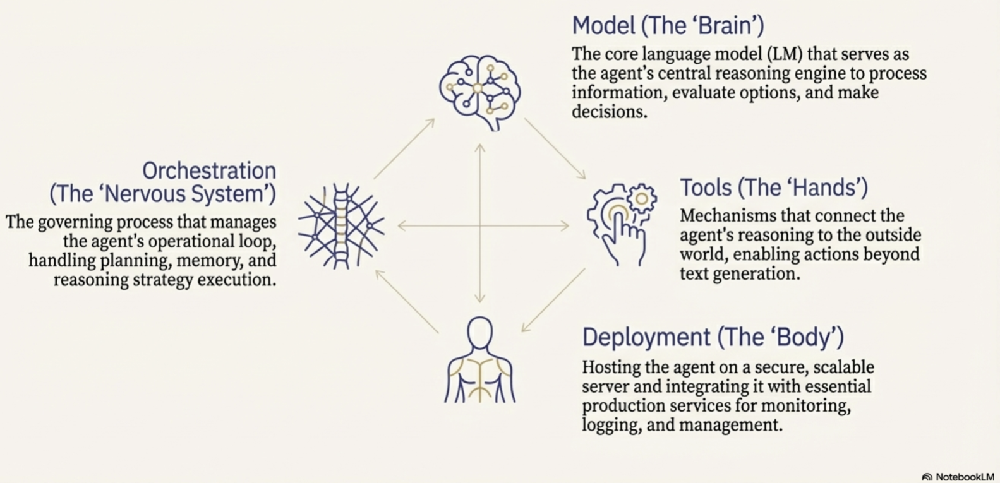
Understanding this definition is the prerequisite for exploring how these systems systematically solve complex, non-deterministic problems.
The Mechanics of Agency: The 5-Step Operational Loop
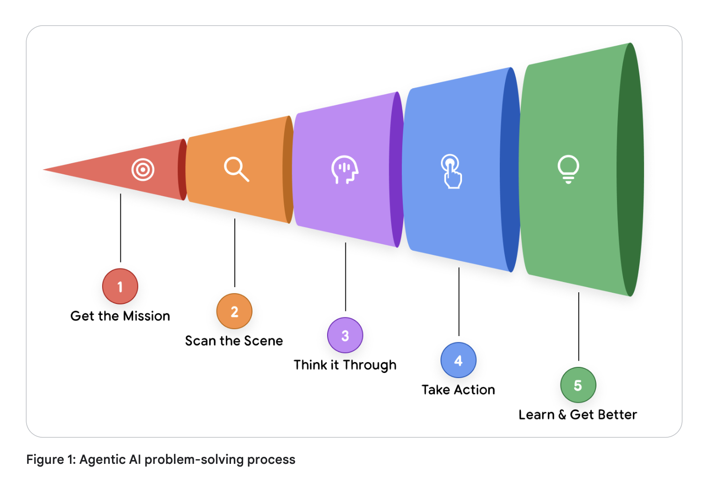
Source: Introduction to Agents; Authors: Alan Blount, Antonio Gulli, Shubham Saboo, Michael Zimmermann, and Vladimir VuskovicMaintain the assurance that the agent remains grounded in the mission despite the probabilistic nature of the underlying model. The “Think, Act, Observe” cycle allows for continuous refinement as the agent interacts with its environment
The 5-Step Cycle
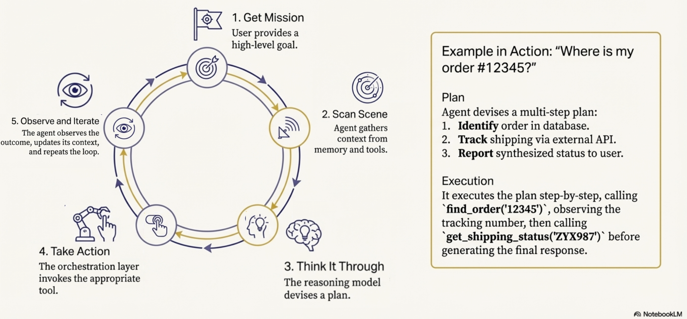
Get the Mission:
The process is initiated by a high-level goal (e.g., “Organize team travel”).
Scan the Scene:
The agent perceives its environment by accessing memory and available resources.
Think It Through:
The reasoning model analyzes the mission against the scene to devise a plan.
Take Action:
The agent executes a concrete step, such as an API call or database query. Observe and Iterate: The agent records the result of the action and feeds it back into the reasoning engine.
A Taxonomy of Intelligence
Classifying agents is critical when scoping projects to manage the trade-offs between system complexity and autonomous capability.
A central differentiator across these levels is Context Engineering:
Context Engineering: the art of context window curation
Context engineering
Context engineering is the modern evolution of what was formerly known as “prompt engineering”.
It is the practice of actively selecting, packaging, and managing the exact information a Language Model (LM) needs to generate a desired output.
For any single call to the LM, context engineering involves carefully curating the input window with a precise blend of elements like
system instructions,
user input,
available tools,
session history,
factual grounding from authoritative sources,
user profiles, and the
results of previously invoked tools
Key aspects of context engineering:
Optimizing the Model’s Attention:
An agent’s accuracy relies entirely on a focused, high-quality context.
Context engineering curates the model’s limited attention, preventing information overload and ensuring efficient, accurate performance.
The Core Function of an Agent:
In essence, AI agents are software systems dedicated entirely to the art of context window curation.
The Orchestration Layer manages a loop of
assembling this context,
prompting the model,
observing the results of any tool actions, and then
re-assembling a new, updated context for the next step.
Emergence in Strategic Problem-Solvers:
Context engineering is the defining skill that emerges in “Level 2” agentic systems (Strategic Problem-Solvers).
For example, if an agent is asked to find a good coffee shop halfway between two locations, it first finds the halfway point (e.g., Millbrae, CA). It then uses context engineering to automatically translate that observation into a new, highly focused search query (e.g.,
query="coffee shop in Millbrae, CA", min_rating=4.0) to complete the next step.
Continuous Autonomous Improvement:
“Enhanced Context Engineering” for self-evolving systems/agents.
The system autonomously and continuously refines its own prompts by learning from past experiences, session logs, and human feedback.
Levels 0-4 of Agentic Systems
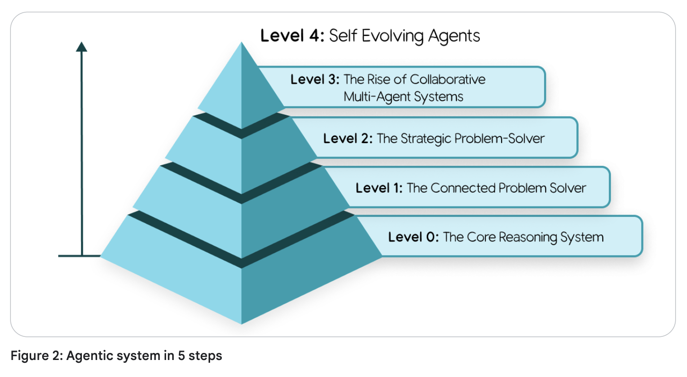
Source: Introduction to Agents; Authors: Alan Blount, Antonio Gulli, Shubham Saboo, Michael Zimmermann, and Vladimir VuskovicLevel 0: The Core Reasoning System (The Isolated Brain)
A Language Model operating solely on pre-trained knowledge.
It is “blind” to real-time events (e.g., knowing baseball rules but not last night’s score)
Level 1: The Connected Problem-Solver (Retrieval/Tools)
The brain gains “hands.”
It uses the 5-step loop to access real-time data via search APIs or RAG (Retrieval-Augmented Generation)
Level 2: The Strategic Problem-Solver (Context Engineering)
The agent performs complex, multi-part goals.
It uses context engineering to select and package the most relevant data for each step
Enable proactive assistance and intent refinement
Level 3: The Collaborative Multi-Agent System (Division of Labor)
A “team of specialists” approach
A coordinator agent delegates missions to specialized sub-agents (e.g., Market Research vs. Web Dev), mirroring a human organization
Level 4: The Self-Evolving System (Autonomous Tool Creation)
The frontier. The system identifies capability gaps and autonomously creates new tools or agents (e.g., writing a new Python script to solve a novel math problem) to expand its own resources.

Moving through these levels requires a deep dive into the “Tripartite Architecture” of the Brain, Hands, and Nervous System.
The Core Anatomy: Model, Tools, and Orchestration
The Brain (The Model)
Benchmark scores are insufficient for agentic tasks
Success requires models that excel at reasoning and reliable tool use
Key considerations of a model in a AI agent:
Strategic Model Routing
Optimize the intersection of quality, speed, and price, architects should use a “team of specialists.”
A frontier model like Gemini 2.5 Pro should be routed for heavy-duty planning,
while the faster, more cost-effective Gemini 2.5 Flash handles intent classification and summarization.
This avoids the “sledgehammer” approach to simple tasks.
Cognitive Ceiling vs. Operational Cost
The model you choose today will be superseded in months
Building a nimble “Agent Ops” practice allows for upgrading the “Brain” without overhauling the entire architecture
The Hands (The Tools)
Tools provide the model’s connection to reality
These connections are categorized as:
Retrieving Information: Grounding the agent via RAG (Vector Databases) or NL2SQL (Structured Databases).
Executing Actions: Changing the world via APIs or Python sandboxes.
Computer Use: A critical frontier where the LM takes control of a user interface—navigating pages and pre-filling forms—often with Human-in-the-Loop oversight.

The Nervous System (The Orchestration Layer)
The orchestrator is the state machine governing the agent’s behavior (Spectrum of Autonomy)
Orchestration Layer
Engine that runs the “Think, Act, Observe” loop
Implementation: Ranges from deterministic, predictable workflows (AI as a tool) to “LM in the driver’s seat” (dynamic planning)
ADK: Code-first frameworks like the Agent Development Kit (ADK) provide the granular control and observability required for mission-critical enterprise systems

Agent Ops: Managing the Stochastic Lifecycle
Standard DevOps and software development rely on unit tests that check if an output perfectly matches an expected result,
This approach fails with the probabilistic nature of generative AI
Transition (from deterministic software to stochastic agentic systems) requires a new operational philosophy.
Agent Ops is the evolution of MLOps for managing this unpredictability
Agent Ops:
A disciplined, structured approach
Tailored to the unique challenges of building, deploying, and governing AI agents.

Agent Ops Toolkit
Measure
Measurement and KPI Tracking
Evaluate
“LM as Judge” for Quality Evaluation
Improve
Metrics-Driven Development
Debug
OpenTelemetry Traces
Human feedback
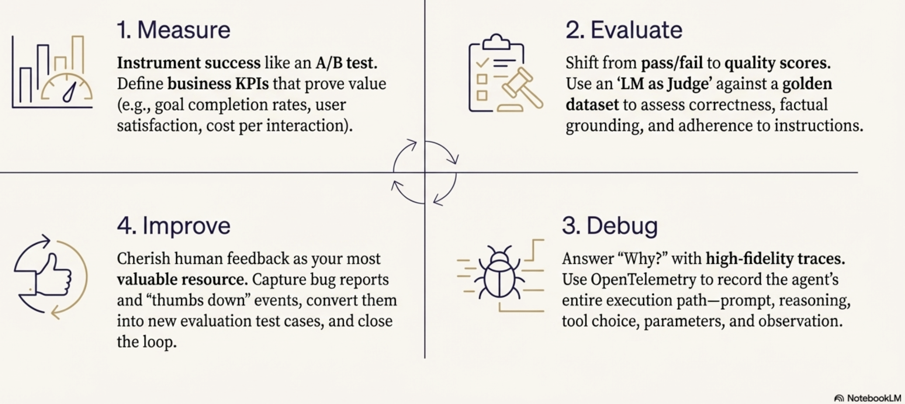
Measurement and KPI Tracking
Before an agent can be improved, its success must be defined like an A/B experiment
Success can be measured by business-aligned KPIs:
Goal completion rates,
User satisfaction scores,
Cost per interaction, and
Task latency.
Foundational tool in Agent Ops is a top-down observability strategy that tracks Key Performance Indicators (KPIs) mapping directly to business value.
Quality Assessment (LM as Judge)
Since pass/fail is impossible, a powerful model evaluates agent outputs against a Golden Dataset (curated prompts/responses) using a rubric (set of instructions or rules) for factuality and tone
Agent Ops replaces traditional unit tests with an “LM as Judge”
This involves using a powerful language model to assess the agent’s output against a predefined rubric, asking questions like:
Did it give the right answer?
Was it factually grounded? Did it follow instructions?
Metrics-Driven Development
Agent Ops utilizes these quality scores to create a “Go/No-Go” gate for deployments
When a developer makes changes, the new agent version is run against the entire evaluation dataset, and its scores are compared directly to the production version
For maximum safety, teams use A/B deployments to slowly roll out the new agent and compare real-world production metrics (like latency and cost) alongside the simulated scores
OpenTelemetry Traces
When metrics dip or a bug is reported, developers need to know exactly why the agent failed.
Agent Ops relies on OpenTelemetry traces, which provide a high-fidelity, step-by-step recording of the agent’s entire execution trajectory
Traces expose the full “thought process” of the agent, including:
The exact prompt sent to the model.
The model’s internal reasoning.
The specific tool it chose to invoke and the parameters it generated.
The raw data it observed in return
These detailed logs can be collected and visualized in platforms like Google Cloud Trace to streamline root cause analysis
Human feedback for closing the Loop
Human feedback (e.g., “thumbs down”) must be captured and converted into new permanent test cases in the evaluation dataset to prevent regression.
DevOps, MLOps, and GenAIOps
 Source: https://medium.com/@sokratis.kartakis/genai-in-production-mlops-or-genaiops-25691c9becd0
Source: https://medium.com/@sokratis.kartakis/genai-in-production-mlops-or-genaiops-25691c9becd0
Security and Governance: Hardening the Agentic Frontier
The “Trust Trade-Off” dictates that as agents gain autonomy, risk increases
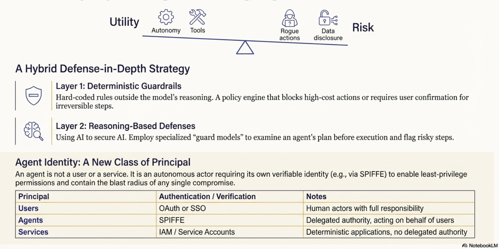
Hybrid Defense Strategy
Deterministic Guardrails
Hardcoded policy engines (e.g., “deny all DELETE commands”)
Reasoning-Based Defenses:
Managed services like Model Armor to screen prompts and plans for injection attacks, jailbreaks, and PII (Personally Identifiable Information) leakage.
Governing the Agent Fleet
Control Plane:
Preventing “Agent Sprawl” through a centralized gateway and registry for runtime policy enforcement and discovery.

The Future: Self-Evolving Systems and Case Studies
The final frontier; Learning Agent Loop
Combine runtime artifacts (logs/traces) and human feedback to autonomously refine context engineering and tool usage.

Agent Gym
A standalone, offline simulation environment that is not in the execution path.
It allows agents to “exercise” on synthetic data and pressure-test optimizations before production deployment.
Advanced Case Studies
Google Co-Scientist:
A multi-agent ecosystem where a “Supervisor” manages specialized agents to explore complex problem spaces, grounding scientific hypotheses in proprietary and public knowledge.
AlphaEvolve:
An evolutionary agentic system that generates human-readable code. It has achieved breakthroughs in improving Google’s data center efficiency, optimizing chip design, and discovering faster matrix multiplication algorithms.
AI Agent Interoperability and MCP
Objectives
Explore the Tool Taxonomy
Understand Agent interoperability:
Analyze the “N x M” integration challenge and how standardized communication layers facilitate ecosystem scaling
Explore MCP concepts, tech-stack security concerns
The Evolution from Models to Agents
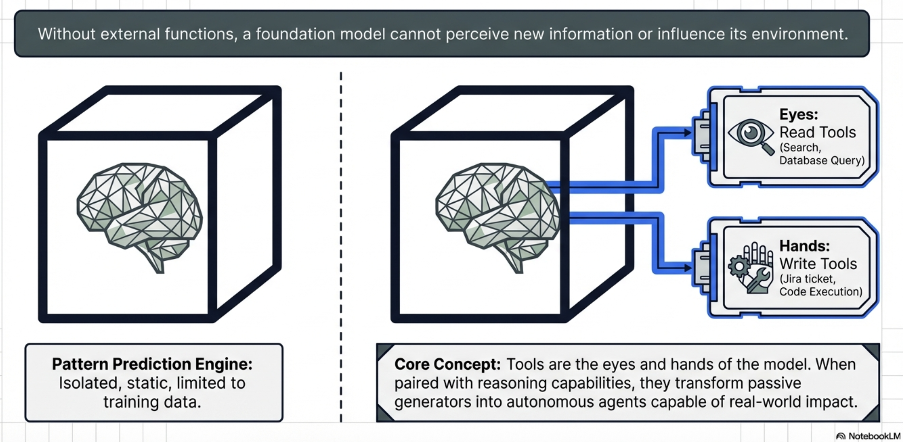
Foundation models were treated as isolated pattern prediction engines, restricted to the static data present at the time of their training LLMs can pass high-level examinations or generate creative prose, but they remained “blind and paralyzed” regarding the real-time world
Agentic AI represents the most significant shift in modern software architecture: moving from models that simply talk about the world to agents that act within it
Tool-calling and integration to LLMs provide the “eyes and hands” necessary to perceive external environments and execute complex workflows
Anatomy and Taxonomy of AI Tools
A tool is a functional contract:
a strict declaration of parameters and purposes that allows a model to extend its capabilities
Tools allow a model to either “know” (retrieve data) or “do” (execute an action)
Anatomy of a tool
Anatomy of a tool is essentially a defined contract between the model and the tool itself, similar to a function in a traditional, non-AI program
Well-structured tool typically consists of the following core anatomical components:
The Name
The Description
Parameters (Input Schema)
Output Schema
Descriptive Error Messages
Anatomical components:
The Name
a clear, unique identifier
Best practices: name should be highly descriptive and human-readable to help the model accurately decide which tool to select.
For example, a specific name like
create_critical_bug_in_jira_with_priorityis much more effective than a generic name likeupdate_jira
The Description
A natural language description
Should explain the tool’s purpose and instructs the LLM on how and when it should be used
A robust description should:
Clearly explain the tool’s inputs, outputs, and purpose without using obscure shorthand or technical jargon
Describe the action the agent needs to perform (what to do) rather than dictating the specific implementation (how to do it)
Include targeted examples to clarify ambiguities and show the model how to handle tricky requests
Parameters (Input Schema)
Must define the expected input parameters, explicitly detailing their required data types and how the tool will use them.
To prevent confusing the model, parameter lists should be kept short with clearly named variables, and default values should be provided and documented whenever possible
In standardized protocols like the Model Context Protocol (MCP), this is formalized as an
inputSchemathat uses standard JSON schema formatting.
Output Schema
Tools should define the structure of the data they return
Establishing a clear output schema (such as a JSON object) serves a dual purpose:
Allows the client application to validate the tool’s results, and
Communicates to the LLM exactly what kind of data it should expect to receive and process
Tools should be designed to return concise output
as large data tables or downloaded files can quickly overwhelm the LLM’s context window, degrading performance and increasing costs
Descriptive Error Messages
Often overlooked aspect
When a tool fails, it should return descriptive error messages back to the calling LLM rather than just raw error codes
These messages provide an additional channel to give the model instructions on how to failover or correct its next action
such as telling the model to “Ask the customer to confirm the product name” if a product ID lookup fails

Note
MCP-Specific Anatomy (Annotations):
If the tool is built using the Model Context Protocol (MCP), its JSON schema anatomy can also include an annotations field. Annotations provide the model with behavioral hints about the tool, such as:
destructiveHint: Indicates the tool may perform destructive updatesreadOnlyHint: Indicates the tool does not modify its environment.idempotentHint: Indicates that calling the tool repeatedly with the same arguments will have no additional effect.
(Note: Because MCP servers may be untrusted, these annotations are considered hints and are not guaranteed to be strictly true).
Good and bad tool documentation
Coding
Good documentation:
def get_product_information(product_id: str) -> dict:
"""
Retrieves comprehensive information about a product based on the unique product ID.
Args:
product_id: The unique identifier for the product.
Returns:
A dictionary containing product details. Expected keys include:
'product_name': The name of the product.
'brand': The brand name of the product
'description': A paragraph of text describing the product.
'category': The category of the product.
'status': The current status of the product (e.g., 'active','inactive', 'suspended').
Example return value:
{
'product_name': 'Astro Zoom Kid's Trainers',
'brand': 'Cymbal Athletic Shoes',
'description': '...',
'category': 'Children's Shoes',
'status': 'active'
}
"""
Bad documentation:
def fetchpd(pid):
"""
Retrieves product data
Args:
pid: id
Returns:
dict of data
"""
Source: Agent Tools & Interoperability with MCP; Authors: Mike Styer, Kanchana Patlolla,Madhuranjan Mohan, and Sal Diaz
Taxonomy of tools
The taxonomy of tools is based on their primary functions and the types of interactions they facilitate.
Four main categories:
Information Retrieval:
These tools allow agents to fetch data from a variety of sources, including web searches, databases, and unstructured documents. This category requires specific design considerations depending on the data type:
Structured Data Retrieval: Used for querying databases or spreadsheets (e.g., NL2SQL), which requires developers to define clear schemas and handle data types gracefully.
Unstructured Data Retrieval: Used for searching documents or knowledge bases (e.g., RAG), requiring robust search algorithms and clear retrieval instructions while managing context window limitations.
Action / Execution:
These tools enable agents to perform real-world operations.
Examples include sending emails, posting messages, initiating code execution, or controlling physical devices.
System / API Integration:
These tools allow agents to connect with existing software systems, integrate into enterprise workflows, or interact with third-party services. The source highlights specific use cases like:
Google Connectors: Interacting with Workspace apps like Gmail or Calendar, which requires handling authentication and API rate limits.
Third-Party Connectors: Integrating with external apps, which necessitates managing API keys securely and implementing error handling for the external calls.
Human-in-the-Loop:
These tools are designed to facilitate collaboration with human users. They allow the agent to ask for clarification, seek human approval before taking critical actions, or hand off tasks that require human judgment.

Engineering Best Practices for Tool Design
LLM’s reasoning engines use the tool documentation as the “instruction manual” for data processing
Best practices for tool design are important for any reliable and effective agentic system
Adhering to tool design best practices is important for
Improving Dynamic Execution:
Tools should be designed to represent granular, user-facing tasks rather than acting as thin wrappers over complex internal APIs
Human developers can navigate complex APIs, but an agent must decide at runtime which parameters to use.
If a tool captures a specific task, the agent is much more likely to call it correctly
Driving Consistency:
Making tools as granular as possible, limited to a single function with clear responsibilities, makes it easier for the agent to consistently determine when a tool is needed
Multi-tools (tools that take many steps in turn or encapsulate a long workflow) can be difficult for models to use reliably
Protecting Performance and Cost:
Poorly designed tools that return large volumes of data (like large tables or files) can quickly swamp an LLM’s context window. Designing for concise output prevents context bloat, which can adversely affect the system’s performance, cost, and ability to reason accurately
Guiding the Agent’s Reasoning:
Best practices like implementing clear input/output schemas and providing descriptive error messages are essential for guiding the agent
The Five Pillars of Tool Engineering
Semantic Naming:
Use human-readable, specific names (e.g., create_critical_jira_bug) to help the planner select the correct tool without ambiguity.
Parameter Simplification:
Keep parameter lists short.
Complex enterprise APIs with hundreds of parameters should be distilled into specialized tool signatures to prevent model confusion.
Action-Oriented Descriptions:
Document what the tool does, not its internal implementation logic.
Describe the objective to allow the model scope for autonomous tool use.
Granularity:
Keep tools focused on a single function.
Granular tools allow the agent to be more consistent in determining when the tool is needed.
Avoid “multi-tool” workflows that increase the probability of model hallucination or refusal.
Output Conciseness:
Do not return massive datasets.
Return reference IDs or temporary database table names.
Large responses swamp the context window and poison the agent’s conversation history.
Expert Tip: Use descriptive error messages as a feedback loop. If a tool fails, return a message that guides the LLM on how to correct the call (e.g., “ID not found; ask the user for the product name and look up the ID again”).
Extended note
Tool Engineering best-practices
1. Prioritize Thorough Documentation Because a tool’s name, description, and attributes are passed directly to the model as part of its request context, they are vital for guiding the model’s behavior.
Use Clear Names: Tool names should be descriptive, specific, and human-readable (e.g.,
create_critical_bug_in_jira_with_priorityinstead ofupdate_jira) to help the model select the right tool and to create clearer audit logs.Clarify Descriptions: Provide detailed descriptions of the tool’s purpose without using shorthand or technical jargon.
Describe Parameters Explicitly: Clearly detail all input and output parameters, their required types, and how the tool will use them. Keep parameter lists short and well-named.
Provide Examples and Defaults: Use targeted examples to clarify ambiguities and show the model how to handle complex requests. Additionally, provide and document default values for key parameters, which LLMs can often use correctly if guided.
2. Describe Actions, Not Implementations The instructions provided to the model should focus on the overarching objective rather than dictating the use of specific tools.
Focus on “What”, Not “How”: Instruct the model on what it needs to achieve (e.g., “create a bug to describe the issue”) rather than how to execute it (e.g., “use the create_bug tool”).
Avoid Redundancy and Rigid Workflows: Do not repeat the tool’s documentation in the system instructions, as this can confuse the model. Furthermore, avoid dictating a rigid sequence of actions; instead, allow the model scope to act autonomously.
Explain Interactions: If a tool has a side effect that impacts another tool (like saving a retrieved web page to a file), document this explicitly so the agent knows how to access the resulting data.
3. Publish Tasks, Not API Calls Tools should be designed to encapsulate specific tasks an agent needs to perform, rather than acting as thin wrappers over existing internal APIs. While complex APIs are designed for humans who understand the full context of the available data, agents must decide dynamically which parameters to use. Defining a tool around a specific task greatly increases the likelihood that the agent will call it correctly.
4. Make Tools as Granular as Possible Standard software coding practices apply to agent tools: they should be concise and limited to a single function.
Define Clear Responsibilities: Ensure each tool has a well-documented purpose, outlining exactly what it does, when it should be called, and what it returns.
Avoid Multi-Tools: Do not create tools that encompass long, multi-step workflows, as these are difficult to document and maintain, and LLMs struggle to use them consistently.
5. Design for Concise Output Returning massive amounts of data—such as large tables, generated images, or downloaded files—can easily swamp an LLM’s context window, degrading performance and increasing costs. Instead of returning large responses directly, tools should leverage external systems for data storage. For instance, a tool could insert a large query result into a temporary database table and simply return the table’s name to the LLM.
6. Use Validation Effectively Implement input and output schema validation wherever possible. Clearly defined schemas serve as runtime checks for the application while acting as additional documentation that helps the LLM understand how to formulate requests and interpret results.
7. Provide Descriptive Error Messages When a tool fails, returning a simple error code is a missed opportunity. Because the tool’s error message is returned to the calling LLM, it should be used as an instructional channel. A descriptive error message should explicitly tell the LLM how to failover or correct its next action, such as instructing the model to ask the user to clarify a product name if a product ID lookup fails.
MCP - Model Context Protocol
The AI industry is currently struggling with fragmentation
Every new model (N) and every new tool (M) requires a custom connector,
leading to an “N x M” integration explosion.
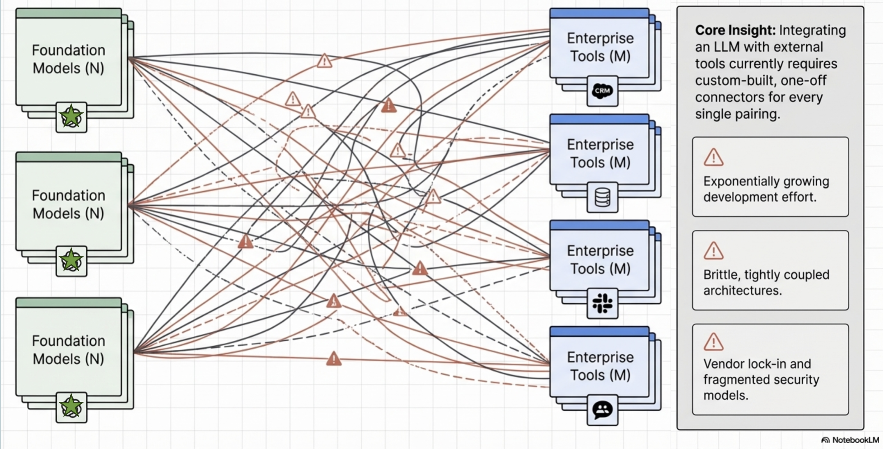
The “N x M” Problem and the MCP Solution
MCP solves “N x M” Problem by providing a universal interface, functioning for AI agents exactly as the Language Server Protocol (LSP) does for IDEs.

Additional figure
MCP in an AI application
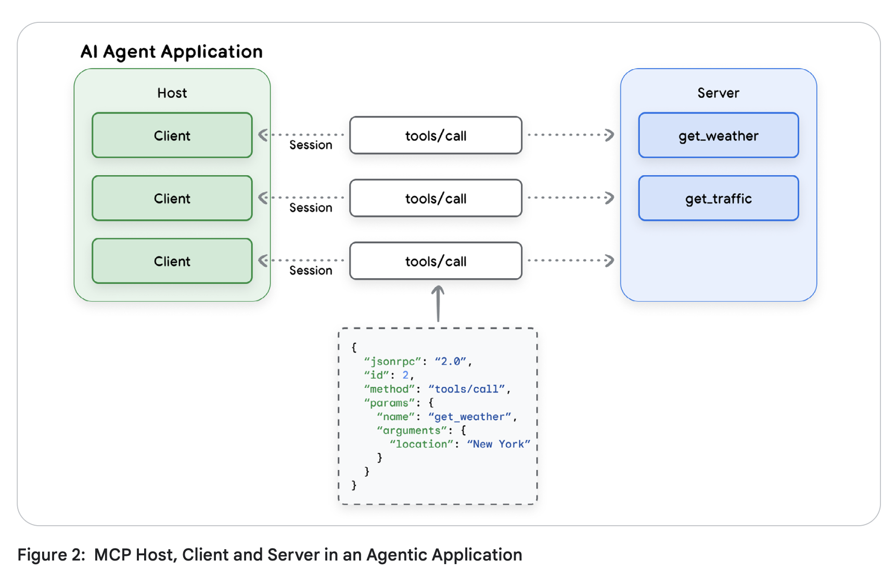
Source: Agent Tools & Interoperability with MCP; Authors: Mike Styer, Kanchana Patlolla,Madhuranjan Mohan, and Sal DiazCore Components of MCP
MCP - Architectural Components
MCP design separates the AI application from its tool integrations,
creating a modular and extensible approach to AI apps and tool development
Allows modular development
AI agent developers - focus on core competencies like reasoning and user experience,
AI tool and third-party developers - build specialized servers for any tool or API
Core architectural components
MCP Host (AI application)
MCP Server (adapter or a proxy for an external tool, data source, or API)
MCP Client (maintains the active connection with the Server)
High-level overview:

How components are connected?
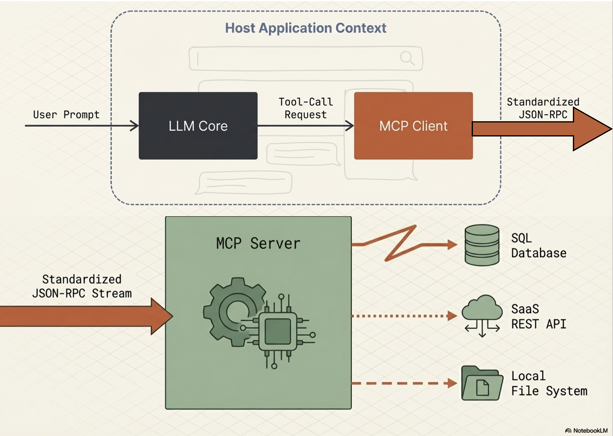
MCP Host
MCP Host is the AI application
MCP Host operate as a standalone application or as a subcomponent within a larger multi-agent system
Responsible for:
orchestrating the use of tools,
user experience, and
enforcing security policies and content guardrails
MCP Host creates and manages individual MCP Clients
MCP Server
Functions as an adapter or a proxy for an external tool, data source, or API
Provides a specific set of capabilities that a developer wants to make available to AI applications
Main responsibilities:
Advertising its available tools (tool discovery),
receiving and executing commands from the Client, and
formatting and returning the results
In enterprise contexts, the Server is also tasked with handling security, scalability, and governance
MCP Client
The embedded component within the host that maintains the active connection with the Server
Dose not interact with the user or reason with the LLM
Responsible for (strictly handel):
issuing commands,
receiving responses, and
managing the lifecycle of the communication session with its designated MCP Server
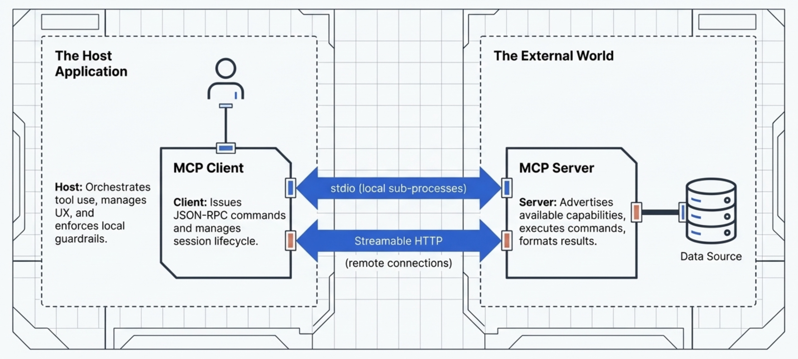
MCP - The Technical Stack
MCP is built upon a standardized communication layer to ensure consistency and interoperability between clients and servers.
MCP - Tech-stack
This stack consists of three primary components:
base Protocol
message Types
transport Mechanisms
Tech-stack:

Base Protocol
MCP uses JSON-RPC 2.0 as its foundational message format. This gives the protocol a structure that is lightweight, text-based, and completely language-agnostic for all its communications.
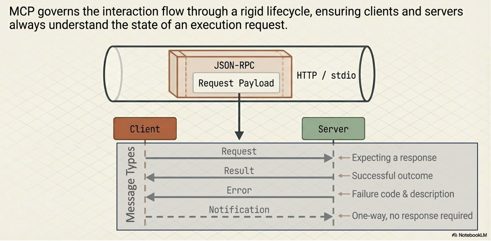
Message Types
The interaction flow within MCP is governed by four fundamental types of messages:
Requests:
Remote Procedure Calls (RPC) sent from one party to the other that expect a response.
Results:
Messages that contain the successful outcome of a corresponding request.
Errors:
Messages that indicate a request failed, which include both an error code and a description.
Notifications:
One-way messages that do not require a response and cannot be replied to.

Transport Mechanisms
To ensure that the client and server can interpret each other’s messages, MCP relies on standard transport protocols. It supports two primary transport mechanisms depending on the deployment environment:
Stdio (Standard Input/Output):
This is utilized for fast and direct local communication, specifically when the MCP server runs as a subprocess of the Host application. It is typically used when tools need to access local resources, such as the user’s filesystem.
Streamable HTTP:
This is the recommended protocol for remote client-server connections. While it supports Server-Sent Events (SSE) for streaming responses, it also allows for stateless servers and can be implemented in a plain HTTP server without strictly requiring SSE.

MCP Primitives
Key concepts or capabilities defined by the MCP specification
Enable LLM-based applications to interact with external systems.
Divided into two categories based on which component provides the capability:
Systematically break down the barriers between isolated AI reasoning engines and the real world
Server-Side:
Capabilities offered by Server to Client
Tools: A standardized way for a server to describe functions it makes available to clients (e.g.,
read_file,get_weather,execute_sql). Tools are the core driver of MCP’s value and are currently the most widely supported primitive.Resources: Contextual data that the server makes available for the host application to use, such as database records, file contents, log files, or images.
Prompts: Reusable prompt templates or examples provided by the server to help clients understand how to best interact with its specific tools and resources.
Client-Side Capabilities:
Capabilities offered by Client to Server
Sampling:
This reverses the typical flow of control by allowing an MCP server to request an LLM completion (a “thought” or summarization) from the client.
Elicitation:
Allows an MCP server to pause its operation and request additional information directly from the human user via the client’s user interface.
Roots:
Defines specific boundaries (currently restricted to
file:URIs) that dictate where a server is permitted to operate within a filesystem.

Note on Adoption: While all these primitives are defined in the protocol, Tools are currently supported by roughly 99% of clients and drive the primary value of MCP. The other primitives (like Sampling, Roots, and Elicitation) have significantly lower adoption (under 10%), so their long-term importance in production environments is still emerging.
Strategic Advantages of MCPs
Accelerating Development and a Reusable Ecosystem
MCP significantly simplifies the development process due to a common, standardized protocol for tool integration
“plug-and-play” ecosystem where tools become easily shareable and reusable assets, supported by centralized directories like the MCP Registry
Dynamically Enhancing Agent Capabilities and Autonomy
Instead of relying on hard-coded tools, MCP-enabled applications can discover available tools at runtime, which grants agents greater adaptability and autonomy
Architectural Flexibility and Future-Proofing
MCP decouples an AI agent’s core reasoning architecture from the specific implementation details of the tools it uses.
MCP enables highly modular systems - Logic, memory, and tools are treated as independent components/modules
Modularity makes it easier to swap out models or backend services without needing to rebuild the entire integration layer
Modularity makes systems much easier to debug, scale, and maintain, allowing organizations to easily swap out underlying LLM providers or backend services without needing to re-architect their integration layer
The Model Context Protocol (MCP) presents a powerful new paradigm for connecting AI agents to external tools, but it comes with a distinct set of tradeoffs. While it offers significant strategic advantages for development and architecture, it also introduces critical challenges regarding performance, enterprise readiness, and security.
The Disadvantages and Challenges (The Risks of MCP)
Performance and Scalability Issues:
Context Window Bloat:
To know what tools are available, the agent must load all tool definitions and schemas from connected MCP servers into its context window.
This can consume a massive amount of tokens, leading to increased costs, higher latency, and the loss of other critical context.
Degraded Reasoning:
Loading too many tool definitions can overwhelm the model, causing it to ignore useful tools, invoke irrelevant ones, or lose track of the user’s original intent
Stateful Complexity:
Using stateful, persistent connections for remote servers can complicate the system architecture, making horizontal scaling and load balancing much harder than with stateless REST APIs.
Enterprise Readiness Gaps:
Authentication and Identity:
The base MCP specification lacks robust, enterprise-ready standards for fine-grained authentication and authorization.
Furthermore, it struggles with identity management, making it ambiguous whether an action is initiated by the end-user, the AI agent, or a generic system account, which complicates auditing.
Lack of Native Observability:
The protocol does not natively define standards for logging, tracing, or metrics
These are essential for debugging and threat detection in production systems
New Security Vulnerabilities:
Dynamic Capability Injection:
Because MCP servers can change the tools they offer without explicit client notification, an agent could unexpectedly inherit dangerous capabilities (e.g., a “read-only” agent suddenly gaining the ability to execute financial transactions). -Tool Shadowing: A malicious tool can be created with a description or trigger very similar to a legitimate tool. If the LLM gets confused and chooses the malicious “shadow” tool, it could hand over sensitive data to an attacker.
Confused Deputy Problem:
Because the MCP server acts as a highly privileged intermediary, a malicious user could use prompt injection to trick the AI into ordering the MCP server to misuse its privileges (e.g., exfiltrating a secure code repository).
Coarse Access Controls:
The protocol only supports coarse-grained client-server authorization. It lacks support for limiting access on a per-tool or per-resource basis, making it difficult to enforce the principle of least privilege.
Context Engineering for Stateful AI Agents
Objectives
Understand what is context engineering and why LLMs need context engineering
Understand following concepts:
Sessions
History Management & Context Compaction
Memory Architecture
Memory Lifecycle
References
Why LLMs need context engineering?
LLMs are inherently stateless
Possess no awareness of previous interactions unless that data is explicitly provided in each request.
By engineering the context, we transform stateless models into state-aware, intelligent agents capable of personalized reasoning and long-term continuity.
In agentic workflows, dynamic context assembly acts as the “mise en place” —the culinary discipline of gathering and preparing all high-quality ingredients and tools before execution begins. Moving from static prompts to dynamic payloads is critical for performance
Fundamentals of Context Engineering
Context Engineering represents a strategic evolution from traditional Prompt Engineering.
Prompt engineering focuses on crafting static instructions, while Context Engineering is the architectural process of dynamically assembling and managing the entire information payload within an LLM’s context window.

Importance of Context Engineering
Tailored Payloads:
Ensures the model receives exactly the information required for a specific task, reducing noise and token waste.
Performance Optimization:
Strategic selection of data minimizes quality degradation caused by information density and attention drift.
Operational Orchestration:
Shifts the burden from hardcoded strings to dynamic systems (RAG, session stores, memory managers) that feed the agent relevant data in real-time.To manage this complexity, context is categorized into three functional tiers:
Context to Guide Reasoning:
Defines the agent’s fundamental patterns. Includes system instructions (persona), tool definitions (API schemas), and few-shot examples (in-context learning).
Evidential & Factual Data:
The substantive data the agent reasons over. Includes long-term memory , external knowledge (RAG), tool/sub-agent outputs , and Artifacts (non-textual data like images or files associated with the session).
Immediate Conversational Information:
Grounds the agent in the present task. Encompasses conversation history , user prompts , and the scratchpad/state for temporary calculations. This flow of information is orchestrated through the primary chronological container of interaction: the Session.
Key components of context engineering
Sessions: Managing the Immediate Dialogue State
Context compaction and History Management
Memory Architecture: The Engine of Long-Term Persistence
Sessions: Managing the Immediate Dialogue State
Session serves as the container for a single, continuous conversation
Strategically, it acts as the agent’s temporary “workbench,”
Hold the immediate tools, notes, and reference materials required for active reasoning
User may have multiple sessions, each remains a distinct, disconnected record to ensure focus
The atomic building blocks of a Session consist of Events and State
Events:
User Inputs: Messages from the user in various formats (text, audio, image).
Agent Responses: The replies generated by the model.
Tool Calls: The agent’s decision to trigger an external API or function.
Tool Outputs: The data returned from those external calls used to continue reasoning.
States:
The implementation of these components varies significantly by framework, influencing how state is persisted:
Feature |
ADK (Application Development Kit) |
LangGraph |
|---|---|---|
Architecture |
Uses explicit Session and Event objects. |
Uses State-as-Session . |
Storage Model |
Decoupled; history and state are distinct folders. |
An all-encompassing, mutable state object. |
History Mutation |
Generally an append-only log of events. |
Mutable; state is transformed or compacted directly. |
Persistence |
Decoupled from the model; saved to Agent Engine. |
Managed through graph logic and internal state persistence. |
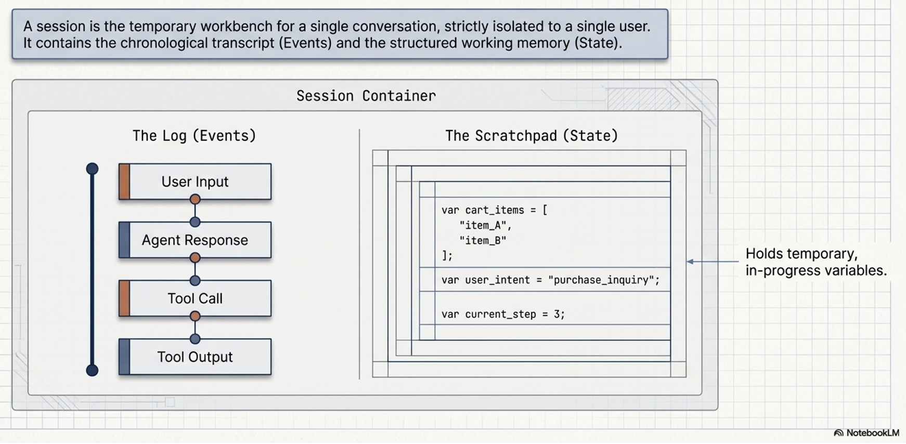
Technical Note: Architects must be wary of “Framework Isolation.” Session storage often couples the database schema to the framework’s internal objects (e.g., ADK Events vs. LangGraph Messages), making conversation records non-portable. To achieve true interoperability in multi-agent systems, developers should utilize a decoupled Memory layer that stores processed, canonical information rather than raw framework-specific objects.
Context Compaction and History Management
The challenge of managing a session’s growth is best described by the “Suitcase Analogy.”
Overpacking the context window leads to high API costs, increased latency, and model confusion.
Conversely, packing too little causes the agent to lose essential context.
Success depends on carrying only what is necessary for the current “trip”.
As token counts increase, performance often degrades due to noise in context.
Developers employ compaction strategies to mitigate this issue.
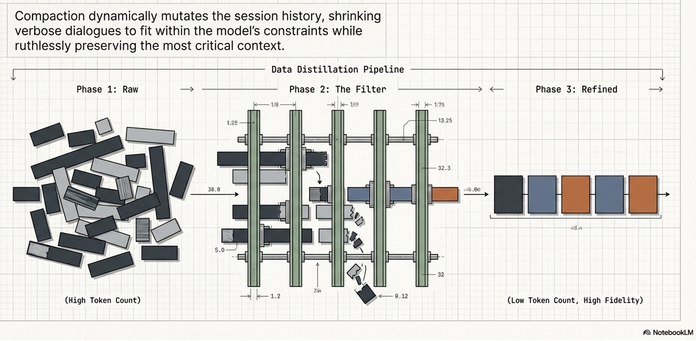
Primary context compaction strategies
Last N Turns:
A simple sliding window that keeps only recent interactions;
Efficient but risks losing “passport-level” critical info from the start.
Token-Based Truncation:
Fills the window up to a predefined limit by working backward from the most recent message.
Recursive Summarization:
Uses an LLM to condense older dialogue into a summary prefixed to verbatim messages.
This maintains density but adds LLM overhead.
Event-Based Triggers:
Triggers compaction only upon semantic task completion or topic shifts, ensuring logical continuity.
Production systems use programmatic configurations to trigger these background processes without blocking the user:
Visual explanation
Last N Turns vs Token-Based Truncation:
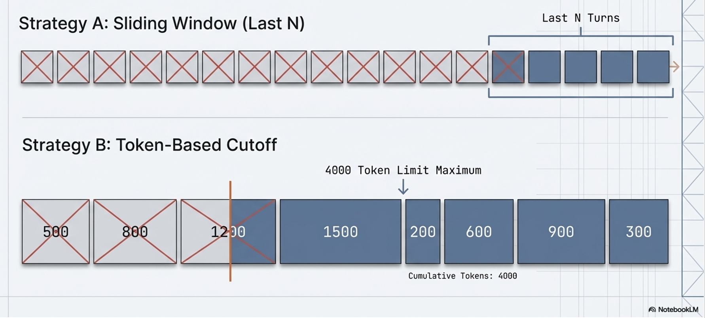
Recursive Summarization:
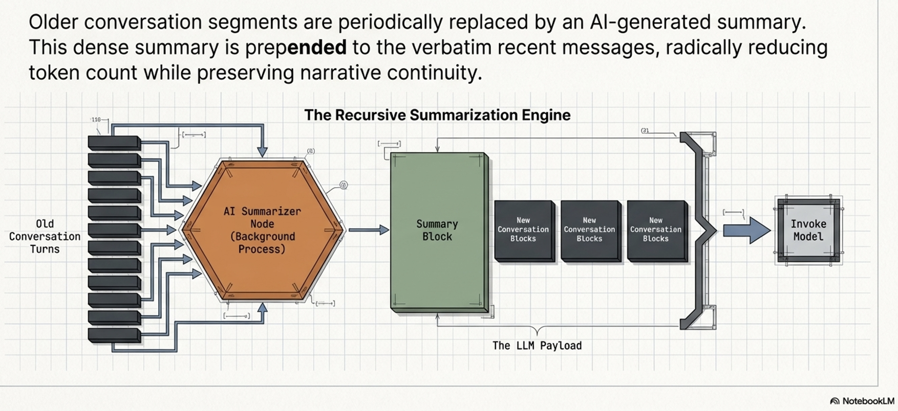
Comparison:

Trigger engines:
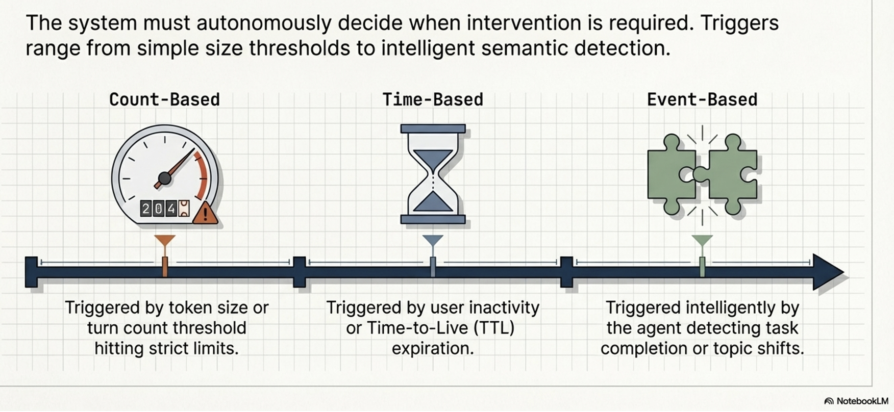
Production architecture:

Evolution of the context:

Coding
# Example of background summarization configuration
from google.adk.apps import App
from google.adk.apps.app import EventsCompactionConfig
app = App(
name='stateful_agent_app',
root_agent=agent,
# Trigger summarization every 5 turns, keeping 1 turn of overlap
events_compaction_config=EventsCompactionConfig(
compaction_interval=5,
overlap_size=1,
),
)
Memory Architecture: The Engine of Long-Term Persistence
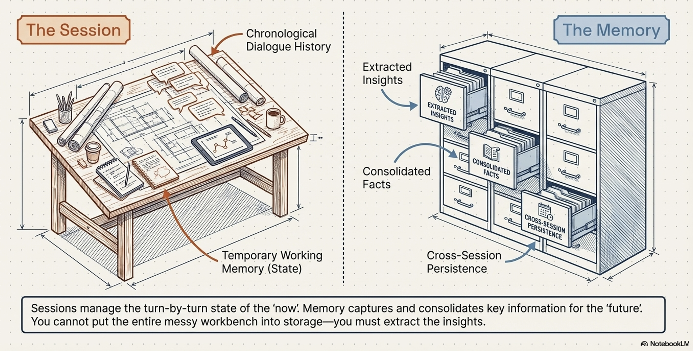
Memory captures meaningful insights that transcend individual sessions.
It is the foundation for personalization and multi-agent interoperability.
Crucially, memory can solve the “cold-start” problem by utilizing Bootstrapped Data—pre-loading memories from internal systems like a CRM to provide a personalized experience even in a first-time interaction.
To distinguish Memory from other patterns, consider the Librarian (RAG) vs. Personal Assistant (Memory) :
Feature |
RAG (The Librarian) |
Memory (The Assistant) |
|---|---|---|
Primary Goal |
Inject global facts/external knowledge. |
Create personalized, stateful experiences. |
Data Source |
Static knowledge bases (PDFs, Wikis). |
User dialogue and behavioral observations. |
Isolation |
Generally shared across all users. |
Strictly isolated; scoped per-user. |
Read/Write |
Batch processed; retrieved as a tool. |
Event-based; extracted from active sessions. |
Categories of “Memory”
Memory is categorized by function:

Declarative Memory (“Knowing What”):
Explicit facts and events (e.g., “The user has a peanut allergy”).
Procedural Memory (“Knowing How”):
Knowledge of workflows and skills.
Procedural memories act as a reasoning “playbook.”
Procedural Memory provides fast, dynamic Adaptation by guiding the agent via in-context learning
Unlike Fine-Tuning/RLHF , which is a slow, offline adaptation of model weights
The Memory Lifecycle: Extraction and Consolidation
Visual explanation
Memory generation is an autonomous, LLM-driven ETL (Extract, Transform, Load) pipeline:
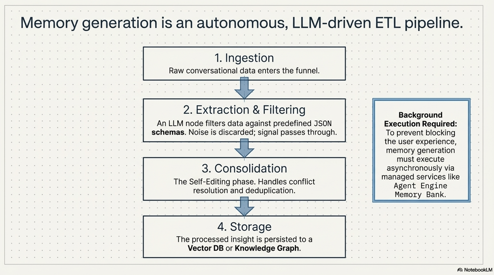
The Pipeline Stages:Ingestion: Collecting raw dialogue or multimodal data.
Nuance: Systems distinguish between Memory FROM a multimodal source (textual insight extracted from a voice memo) and Memory WITH multimodal content (storing the binary image/audio itself).
Extraction & Filtering: Identifying “meaningful” content via topic definitions.
Consolidation: The “Self-Curation” phase where the LLM Merges updates, Updates nuances, or Deletes invalidated data (e.g., if a user changes their preference).
Storage: Persistence to Vector Databases or Knowledge Graphs.
Automation is the core:
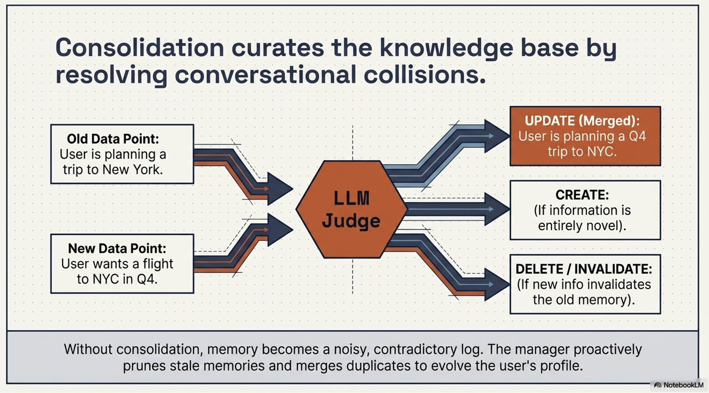
Automation is the core differentiator here
The system uses reasoning to curate the knowledge base rather than simply storing every turn.
Memory Provenance and the Hierarchy of Trust
A memory’s reliability is derived from its origin
Systems must track:
Bootstrapped Data: (CRM/Internal) - high trust.
User Input: (Explicit forms vs. implicit inference) - Medium to High Trust.
Tool Output: (API returns) - Low Trust; often brittle or stale.
In the event of contradictions, the Hierarchy of Trust dictates that high-trust bootstrapped data or explicit user commands override implicit inferences.

Strategic context injection
Strategic context injection in Memory Retrieval and Inference Strategies:
This is the final critical step after memory retrieval
Selected memories are placed into the model’s context window
Strategic context injection
significantly influences LLM’s reasoning,
affects operational costs, and
ultimately determines the quality of the final answer
Strategies for injecting memory into inference process
Appending to System Instructions
Appending retrieved memories directly to the system prompt
Injecting into Conversation History
Retrieved memories are injected directly into the turn-by-turn dialogue, either before the full history, right before the latest user query, or via tool call outputs.
The Hybrid Strategy:
Often the most effective in practice
Using the system prompt for stable, global memories that should always be present, while reserving dialogue injection or memory tools for transient, episodic memories relevant only to the immediate moment.
This successfully balances persistent context with the flexibility of in-the-moment retrieval
Injecting Confidence Scores for Nuanced Reasoning
Strategic context injection also involves managing the model’s trust in the information. Rather than simply presenting facts to the user, memories and their dynamic confidence scores are injected directly into the system prompt. This allows the LLM to internally assess the reliability of the information, weigh the evidence, and make more nuanced, trustworthy decisions during inference.
Retrieval must balance utility against strict latency budgets.
Advanced systems use multi-dimensional scoring:
Relevance: Semantic similarity.
Recency: Time-based decay.
Importance: Inherent significance, often assigned at generation-time
To improve accuracy, architects utilize
Query Rewriting (disambiguating user prompts) and
Reranking (using a more expensive LLM to re-evaluate the top candidate memories).

Case-study part 1: Explore Anatomy and Taxonomy of Agents
Objectives
Explore core concepts of Autonomous Systems using Norwegian Language Learning Agent
Concepts
Core Anatomy and Taxonomy of Agents
The Agent’s Operational Loop
Complete Loop Diagram
Taxonomy of Capabilities
Conversational Agent for language learning
Python implementation
Agent Codebase
agent.py
from google.adk.agents import LlmAgent
from google.adk.agents.callback_context import CallbackContext
from google.adk.sessions.sqlite_session_service import SqliteSessionService
from google.adk.memory.in_memory_memory_service import InMemoryMemoryService
from google.genai.types import GenerateContentConfig, ThinkingConfig
from google.adk.agents.run_config import RunConfig, StreamingMode
import os
import sys
from .tools import list_scenarios, select_scenario, get_vocabulary, mark_word_practiced, get_progress, end_scenario, get_user_profile
from .prompts import build_instruction
from .scenarios import SCENARIOS
SYSTEM_INSTRUCTION = """
Du er en vennlig og tålmodig norsk språkpartner.
Bruk alltid norsk.
Du befinner deg først i en "meny"-modus.
Hovedoppgaven din her er å hjelpe brukeren med å velge et praksis-scenario.
Bruk `list_scenarios`-verktøyet for å fortelle brukeren hvilke scenarioer (situasjoner) de kan øve på.
Når brukeren har valgt et scenario, eller du forstår hvilket de vil bruke, bruk `select_scenario`-verktøyet for å bytte rolle.
Etter å ha byttet rolle, ta umiddelbart på deg den nye personligheten (persona) og start samtalen med 'opening_line' fra scenarioet.
Hold deg i denne rollen og svar utelukkende på norsk.
Hold svarene dine svært korte (1-2 små setninger).
Dersom brukeren gjør grammatikkfeil eller uttaler noe feil, gi en rask og vennlig korreksjon på norsk.
Hvis brukeren står fast eller ber om hjelp til noen ord ("hva sier jeg?", "trenger vokabular"), bruk `get_vocabulary`-verktøyet for det valgte scenarioet og foreslå 2-3 relevante norske uttrykk med engelsk oversettelse.
VIKTIG: Hvis brukeren spør om betydningen eller definisjonen av et ord ("hva betyr", "definer", "hva er"), MÅ du bruke `lookup_word` verktøyet fra det eksterne registeret. Hvis MCP-serveren ikke svarer eller feiler, bruk den lokale kunnskapen din som fallback.
Dersom brukeren sier "bytt scenario" eller "new scenario", gå ut av rollen din og tilbake til "meny"-modus for å velge et nytt scenario.
"""
async def on_before_agent(callback_context: CallbackContext):
state = callback_context.state
scenario_id = state.get("active_scenario_id")
memory_info = ""
# Search memory if no active scenario yet to personalize greeting
if not scenario_id:
try:
memories = await callback_context.search_memory("scenario fullført")
if memories and memories.memories:
memory_info = "\n\nKontekst fra tidligere samtaler:\n"
for mem in memories.memories[-3:]: # last 3 memories
memory_info += f"- {mem.content.parts[0].text if mem.content and mem.content.parts else ''}\n"
except Exception:
pass
if scenario_id and scenario_id in SCENARIOS:
scenario = SCENARIOS[scenario_id]
new_instruction = build_instruction(scenario, state)
root_agent.instruction = new_instruction
else:
root_agent.instruction = SYSTEM_INSTRUCTION + memory_info
async def on_after_agent(callback_context: CallbackContext):
count = callback_context.state.get("exchange_count", 0)
callback_context.state["exchange_count"] = count + 1
try:
await callback_context.add_session_to_memory()
except Exception:
pass
session_service = SqliteSessionService("sessions.db")
memory_service = InMemoryMemoryService()
MODEL_ID = "gemini-live-2.5-flash-native-audio"
root_agent = LlmAgent(
name="norsk_agent",
model=MODEL_ID,
instruction=SYSTEM_INSTRUCTION,
tools=[list_scenarios, select_scenario, get_vocabulary, mark_word_practiced, get_progress, end_scenario, get_user_profile],
before_agent_callback=on_before_agent,
after_agent_callback=on_after_agent,
)
prompts.py
def build_instruction(scenario: dict, state: dict) -> str:
"""
Builds a dynamic system instruction based on the scenario and the user's progress.
"""
persona = scenario.get("persona", "")
vocabulary = scenario.get("vocabulary", [])
words_practiced = state.get("words_practiced", [])
exchange_count = state.get("exchange_count", 0)
exchange_count = state.get("exchange_count", 0)
weak_words = state.get("user:weak_words", [])
# Base setup
instruction = f"{persona}\n\nDu må kun snakke NORSK til enhver tid.\n"
instruction += "Svarene dine må være svært korte (1-2 små setninger).\n"
instruction += "Dersom brukeren gjør feil, rett dem raskt og vennlig på norsk.\n\n"
if weak_words:
instruction += f"VIKTIG: I tidligere samtaler har brukeren hatt problemer med disse ordene: {', '.join(weak_words)}.\nPrøv å flette dem inn i samtalen hvis det passer.\n\n"
# Inject state awareness if vocabulary exists
if vocabulary:
instruction += "Brukeren prøver å lære følgende vokabular:\n"
for v in vocabulary:
status = " [LÆRT]" if v["no"] in words_practiced else ""
instruction += f"- {v['no']} ({v['en']}){status}\n"
instruction += "\nPrøv å styre samtalen slik at brukeren får bruk for ordene som IKKE er lært ennå.\n"
if exchange_count > 0:
instruction += f"Dere har snakket sammen i {exchange_count} utvekslinger. Fortsett naturlig.\n"
return instruction
scenarios.py
SCENARIOS = {
"cafe": {
"id": "cafe",
"title_no": "På kafé",
"title_en": "At the café",
"persona": "Du er en vennlig servitør på en kafé i Oslo.",
"opening_line": "Hei! Hva kan jeg friste med i dag?",
"vocabulary": [
{"no": "en kaffe", "en": "a coffee"},
{"no": "kan jeg få", "en": "can I get"},
{"no": "en bolle", "en": "a bun/pastry"},
{"no": "å betale", "en": "to pay"},
{"no": "kort eller kontant?", "en": "card or cash?"},
{"no": "kvittering", "en": "receipt"},
{"no": "en te", "en": "a tea"},
{"no": "et smørbrød", "en": "a sandwich"},
{"no": "sukker", "en": "sugar"},
{"no": "melk", "en": "milk"},
{"no": "takk", "en": "thanks"},
{"no": "vær så snill", "en": "please"}
]
},
"hotel": {
"id": "hotel",
"title_no": "På hotellet",
"title_en": "At the hotel",
"persona": "Du er en imøtekommende resepsjonist på et hotell.",
"opening_line": "Velkommen til oss! Har du en reservasjon?",
"vocabulary": [
{"no": "en reservasjon", "en": "a reservation"},
{"no": "et rom", "en": "a room"},
{"no": "et enkeltrom", "en": "a single room"},
{"no": "et dobbeltrom", "en": "a double room"},
{"no": "frokost inkludert", "en": "breakfast included"},
{"no": "nøkkelkort", "en": "key card"},
{"no": "å sjekke inn", "en": "to check in"},
{"no": "å sjekke ut", "en": "to check out"},
{"no": "bagasje", "en": "luggage"},
{"no": "legitimasjon", "en": "ID"},
{"no": "underskrift", "en": "signature"},
{"no": "heisen", "en": "the elevator"}
]
},
"train": {
"id": "train",
"title_no": "På togstasjonen",
"title_en": "At the train station",
"persona": "Du er en hjelpsom billettør på togstasjonen.",
"opening_line": "Hei! Hvor vil du reise i dag?",
"vocabulary": [
{"no": "en billett", "en": "a ticket"},
{"no": "enveisbillett", "en": "one-way ticket"},
{"no": "tur-retur", "en": "round trip"},
{"no": "neste tog", "en": "next train"},
{"no": "plassbillett", "en": "seat reservation"},
{"no": "et spor", "en": "a track"},
{"no": "en perrong", "en": "a platform"},
{"no": "forsinket", "en": "delayed"},
{"no": "i tide", "en": "on time"},
{"no": "avgang", "en": "departure"},
{"no": "ankomst", "en": "arrival"},
{"no": "vindusplass", "en": "window seat"}
]
},
"grocery": {
"id": "grocery",
"title_no": "I matbutikken",
"title_en": "At the grocery store",
"persona": "Du sitter i kassa på en travel matbutikk.",
"opening_line": "Hei! Trenger du en pose?",
"vocabulary": [
{"no": "en pose", "en": "a bag"},
{"no": "å betale", "en": "to pay"},
{"no": "kvittering", "en": "receipt"},
{"no": "tilbud", "en": "offer/sale"},
{"no": "brød", "en": "bread"},
{"no": "melk", "en": "milk"},
{"no": "grønnsaker", "en": "vegetables"},
{"no": "frukt", "en": "fruit"},
{"no": "dyrt", "en": "expensive"},
{"no": "billig", "en": "cheap"},
{"no": "å kaste", "en": "to throw away"},
{"no": "en kasse", "en": "a checkout"}
]
},
"doctor": {
"id": "doctor",
"title_no": "Hos legen",
"title_en": "At the doctor's",
"persona": "Du er en profesjonell og omsorgsfull lege.",
"opening_line": "Hei, kom inn og sett deg. Hva kan jeg hjelpe deg med?",
"vocabulary": [
{"no": "vondt i hodet", "en": "headache"},
{"no": "feber", "en": "fever"},
{"no": "å hoste", "en": "to cough"},
{"no": "forkjølet", "en": "a cold"},
{"no": "en resept", "en": "a prescription"},
{"no": "et apotek", "en": "a pharmacy"},
{"no": "en time", "en": "an appointment"},
{"no": "piller", "en": "pills"},
{"no": "å puste", "en": "to breathe"},
{"no": "slapp", "en": "lethargic/weak"},
{"no": "bedring", "en": "recovery"},
{"no": "god bedring", "en": "get well soon"}
]
}
}
tools.py
from google.adk.agents import Context
from .scenarios import SCENARIOS
def list_scenarios() -> list[dict[str, str]]:
"""
Returns the list of available practice scenarios.
Returns:
A list of dictionaries, where each contains:
- id: the internal scenario ID
- title_no: the Norwegian title
- title_en: the English title
"""
return [
{
"id": s["id"],
"title_no": s["title_no"],
"title_en": s["title_en"]
}
for s in SCENARIOS.values()
]
def select_scenario(tool_context: Context, scenario_id: str) -> dict:
"""
Selects a scenario by ID and returns its context, triggering a persona switch.
Args:
tool_context: The ADK context object containing session state.
scenario_id: The ID of the scenario to switch to.
Returns:
A dictionary with the scenario details (id, title_no, title_en, persona, opening_line)
or an error message in Norwegian if the ID is invalid.
"""
if scenario_id not in SCENARIOS:
return {"error": f"Beklager, jeg kjenner ikke til scenarioet '{scenario_id}'."}
# Initialize state
tool_context.state["active_scenario_id"] = scenario_id
tool_context.state["words_practiced"] = []
tool_context.state["exchange_count"] = 0
scenario = SCENARIOS[scenario_id]
return {
"id": scenario["id"],
"title_no": scenario["title_no"],
"title_en": scenario["title_en"],
"persona": scenario["persona"],
"opening_line": scenario["opening_line"]
}
def get_vocabulary(scenario_id: str) -> dict:
"""
Retrieves the vocabulary list for a given scenario.
Args:
scenario_id: The ID of the scenario.
Returns:
A dictionary containing the English-Norwegian vocabulary pairs, or an error.
"""
if scenario_id not in SCENARIOS:
return {"error": f"Beklager, jeg kan ikke finne vokabular for '{scenario_id}'."}
return {"vocabulary": SCENARIOS[scenario_id]["vocabulary"]}
def mark_word_practiced(tool_context: Context, word: str, correct: bool) -> str:
"""
Marks a vocabulary word as practiced by the user.
Args:
tool_context: The ADK context.
word: The Norwegian vocabulary word that was practiced.
correct: True if the user used it correctly, False otherwise.
Returns:
A confirmation string.
"""
practiced = tool_context.state.get("words_practiced", [])
if correct and word not in practiced:
practiced.append(word)
tool_context.state["words_practiced"] = practiced
return f"Flott! '{word}' er markert som lært."
elif not correct:
return f"Notert at '{word}' trenger mer øving."
return f"'{word}' er allerede lært."
def get_progress(tool_context: Context) -> dict:
"""
Returns the user's progress in the current scenario.
Args:
tool_context: The ADK context.
Returns:
A dictionary with the progress statistics.
"""
active_scenario_id = tool_context.state.get("active_scenario_id")
if not active_scenario_id or active_scenario_id not in SCENARIOS:
return {"error": "Ingen aktivt scenario for å vise fremgang."}
scenario = SCENARIOS[active_scenario_id]
total_words = len(scenario.get("vocabulary", []))
practiced = tool_context.state.get("words_practiced", [])
practiced_count = len(practiced)
return {
"scenario_id": active_scenario_id,
"words_practiced": practiced,
"practiced_count": practiced_count,
"total_words": total_words,
"completion_percentage": (practiced_count / total_words) * 100 if total_words > 0 else 0
}
def end_scenario(tool_context: Context) -> str:
"""
Ends the current practice scenario, calculating accuracy and saving progress to the user's profile.
Args:
tool_context: The ADK context.
Returns:
A string summarizing the user's performance and returning to menu mode.
"""
active_scenario_id = tool_context.state.get("active_scenario_id")
if not active_scenario_id or active_scenario_id not in SCENARIOS:
return "Bruk 'select_scenario' for å velge et scenario først."
scenario = SCENARIOS[active_scenario_id]
vocab = scenario.get("vocabulary", [])
words_practiced = tool_context.state.get("words_practiced", [])
target_words = {item["norwegian"] for item in vocab}
practiced_set = set(words_practiced)
weak_words = target_words - practiced_set
completed = tool_context.state.get("user:completed_scenarios", 0)
tool_context.state["user:completed_scenarios"] = completed + 1
all_weak_words = set(tool_context.state.get("user:weak_words", []))
all_weak_words.update(weak_words)
tool_context.state["user:weak_words"] = list(all_weak_words)
tool_context.state["active_scenario_id"] = None
tool_context.state["words_practiced"] = []
weak_str = ', '.join(weak_words) if weak_words else 'Ingen'
return f"Scenario fullført! Du klarte {len(practiced_set)} av {len(target_words)} ord. Ord for ekstra øving: {weak_str}. Du er nå i meny-modus."
def get_user_profile(tool_context: Context) -> dict:
"""
Retrieves the user's cross-session practice profile and statistics.
Args:
tool_context: The ADK context.
Returns:
A dictionary containing the user's statistics across all sessions.
"""
return {
"completed_scenarios": tool_context.state.get("user:completed_scenarios", 0),
"weak_words": tool_context.state.get("user:weak_words", [])
}
Warning
Codebase is developed via a coding agent, following Specs-driven development practices
Explore Core Anatomy and Taxonomy of the Conversational Agent
Agent agent.py
Instantiates a single
LlmAgentaround Geminigemini-live-2.5-flash-native-audioBootstrapped with a Norwegian-only
SYSTEM_INSTRUCTIONSession persistence via
SqliteSessionService, andVolatile personalization through
InMemoryMemoryService
Dynamic persona shifts happen inside
on_before_agent,which swaps the root instruction with
build_instruction()output wheneveractive_scenario_idchanges,while
on_after_agentincrements the turn counter and syncs conversation traces into memory
Tools tools.py
Exposes a taxonomy of stateful ADK tools:
Menu-level selectors (
list_scenarios,select_scenario),formative assessment helpers (
mark_word_practiced,get_progress,end_scenario), andlongitudinal profiling (
get_user_profile).
Vocabulary scaffolding comes from
get_vocabularyEvery tool either reads from or mutates
Context.state,which becomes the single source of truth for exchange counts, weak-word tracking, and persona activation
Orchestration Layer
Conversation flow blends declarative prompts with scenario metadata from prompts.py and scenarios.py
build_instruction()injects adaptive cues (weak words, practiced vocabulary, exchange counts) into the system prompt so the LLM stays context-aligned without bespoke planner code.Callbacks + state + tool contracts form an implicit orchestration layer without a separate conductor service.
The Agent’s Operational Loop
The agent’s operational loop consists of four phases:
Phase 1: Context Preparation (Before Agent)
Phase 2: Agent Reasoning (Core Loop)
Phase 3: Tool Execution (Tool Integration)
Phase 4: State Persistence (After Agent)
Phase 1: Context Preparation (Before Agent)
Before the agent processes any input, it prepares its context
Why this matters:
The agent’s behavior depends in the context (behavior is context-aware, not one-size-fits-all)
Session continuity should be maintained across conversations
The agent’s instruction set evolves based on user progress
What happens here:
State Retrieval: The agent accesses persisted session state (current scenario, words practiced, exchange count)
Memory Search: It queries the memory service for past interactions to provide context-aware personalization
Dynamic Instruction Building: The system instruction is reconstructed based on current state, not static
Python implementation
Context Preparation
# From agent.py: on_before_agent callback
async def on_before_agent(callback_context: CallbackContext):
state = callback_context.state
scenario_id = state.get("active_scenario_id")
memory_info = ""
# Search memory for personalization
if not scenario_id:
try:
memories = await callback_context.search_memory("scenario fullført")
if memories and memories.memories:
memory_info = "\n\nKontekst fra tidligere samtaler:\n"
for mem in memories.memories[-3:]:
memory_info += f"- {mem.content...}\n"
except Exception:
pass
# Dynamically build instruction based on state
if scenario_id and scenario_id in SCENARIOS:
scenario = SCENARIOS[scenario_id]
new_instruction = build_instruction(scenario, state)
root_agent.instruction = new_instruction
else:
root_agent.instruction = SYSTEM_INSTRUCTION + memory_info
Phase 2: Agent Reasoning (Core Loop)
The agent receives user input, applies tools to gather information, and generates a response:
The internal loop:
Observe: Receive user utterance (“Jeg vil velge kafé-scenarioet”)
Plan: Reason about which tools to use (e.g.,
select_scenario)Act: Call the tool with appropriate arguments
Observe: Receive tool output with scenario details
Generate: Compose response based on tool results
Python implementation
Agent Reasoning
root_agent = LlmAgent(
name="norsk_agent",
model=MODEL_ID,
instruction=SYSTEM_INSTRUCTION,
tools=[list_scenarios, select_scenario, get_vocabulary,
mark_word_practiced, get_progress, end_scenario,
get_user_profile],
)
Phase 3: Tool Execution (Tool Integration)
The agent invokes tools to affect state or retrieve information: State mutation happens here: The agent’s tools modify session state directly.
Example tool call sequence:
User: “Jeg vil velge kafé-scenarioet”
Agent reasoning: “User wants cafe scenario → call select_scenario(‘cafe’)”
Python implementation
Agent Reasoning
# Tool execution (tools.py):
def select_scenario(tool_context: Context, scenario_id: str) -> dict:
if scenario_id not in SCENARIOS:
return {"error": f"Beklager, jeg kjenner ikke til scenarioet '{scenario_id}'."}
# Modify state
tool_context.state["active_scenario_id"] = scenario_id
tool_context.state["words_practiced"] = []
tool_context.state["exchange_count"] = 0
# Return result
scenario = SCENARIOS[scenario_id]
return {
"id": scenario["id"],
"title_no": scenario["title_no"],
"persona": scenario["persona"],
"opening_line": scenario["opening_line"]
}
Phase 4: State Persistence (After Agent)
After generating a response, the agent persists relevant information:
What happens:
Exchange counter is incremented (used to track conversation depth)
The entire session is serialized to long-term memory
Future conversations can query this memory for context
Python implementation
State Persistence
# From agent.py: on_after_agent callback
async def on_after_agent(callback_context: CallbackContext):
count = callback_context.state.get("exchange_count", 0)
callback_context.state["exchange_count"] = count + 1
# Add current session to long-term memory
try:
await callback_context.add_session_to_memory()
except Exception:
pass
Complete Loop Diagram
User Input
↓
[1] on_before_agent()
├─ Retrieve session state
├─ Query memory for personalization
└─ Rebuild dynamic instruction
↓
[2] Agent Reasoning
├─ Observe: Parse user intent
├─ Plan: Decide which tools to call
├─ Act: Execute tools
└─ Generate: Create response
↓
[3] Tool Execution
├─ Modify state (active_scenario_id, words_practiced, etc.)
└─ Return results to agent
↓
[4] on_after_agent()
├─ Increment exchange counter
└─ Persist session to memory
↓
Response to User
Taxonomy of Capabilities
Agent capabilities fall into distinct categories:
Observation (Perception)
Action (Effecting State)
Communication (Expression)
Memory (Persistent Knowledge)
Observation (Perception)
How the agent perceives its environment:
Python implementation
Observation (Perception)
# Capability 1: Access to session state
state = callback_context.state
active_scenario_id = state.get("active_scenario_id")
words_practiced = state.get("words_practiced", [])
exchange_count = state.get("exchange_count", 0)
The agent observes:
Current scenario ID
Words practiced in this session
Number of exchanges (conversation depth)
User’s cross-session profile (completed scenarios, weak words)
Action (Effecting State)
How the agent affects its environment:
Python implementation
Action (Effecting State)
# Capability 2: Direct state mutation through tools
def mark_word_practiced(tool_context: Context, word: str, correct: bool) -> str:
practiced = tool_context.state.get("words_practiced", [])
if correct and word not in practiced:
practiced.append(word)
tool_context.state["words_practiced"] = practiced # ← State mutation
return f"Flott! '{word}' er markert som lært."
The agent can:
Change the active scenario
Mark words as learned
Update user profiles
Track progress
Communication (Expression)
How the agent expresses itself:
Python implementation
Communication (Expression)
# Capability 3: Natural language generation constrained by instruction
SYSTEM_INSTRUCTION = """
Du er en vennlig og tålmodig norsk språkpartner.
Bruk alltid norsk.
Hold svarene dine svært korte (1-2 små setninger).
Dersom brukeren gjør grammatikkfeil, gi en rask og vennlig korreksjon.
"""
The agent is instructed to:
Speak only Norwegian
Keep responses short (1-2 sentences)
Provide gentle corrections
Adapt persona based on scenario
Memory (Persistent Knowledge)
How the agent remembers:
Python implementation
Memory (Persistent Knowledge)
# Capability 4: Long-term memory retrieval and storage
memories = await callback_context.search_memory("scenario fullført")
# Can query for:
# - Completed scenarios
# - Weak words (weak_words list)
# - Past interactions
The agent remembers:
Which scenarios have been completed
Words the user struggles with
The trajectory of learning progress
Case-study part 2: Explore basics of context engineering
Objectives
Understand how memory behave in agentic systems
Explore how to apply context engineering techniques in real-world
What Is Context?
Context is the complete information the agent needs to make decisions. It includes:
Short-term context:
Immediate context: Current conversation, active scenario
Session context: User’s state within one session
Long-term context: User’s profile across sessions
Session Management
What Is a Session?
A session represents one continuous interaction between user and agent:
session_service = SqliteSessionService("sessions.db")
Sessions are:
Persistent: Stored in a database
Isolated: One user, one conversation thread
Stateful: Maintain variables that evolve during the conversation
How Sessions Store State
Python implementation
# In tools.py
def select_scenario(tool_context: Context, scenario_id: str) -> dict:
# These go into session state
tool_context.state["active_scenario_id"] = scenario_id
tool_context.state["words_practiced"] = []
tool_context.state["exchange_count"] = 0
# In agent.py - on_after_agent callback
async def on_after_agent(callback_context: CallbackContext):
count = callback_context.state.get("exchange_count", 0)
callback_context.state["exchange_count"] = count + 1 # Persisted
Session State Schema
Session State = {
"active_scenario_id": "cafe", # Current practice scenario
"words_practiced": ["en kaffe", "å betale"], # Words learned this session
"exchange_count": 5, # Number of turns in conversation
# Cross-session profile
"user:completed_scenarios": 3,
"user:weak_words": ["kort eller kontant?", "heisen"],
# Additional context
"user:preferred_difficulty": "intermediate"
}
Retrieving Session State
Python implementation
# In on_before_agent
state = callback_context.state
scenario_id = state.get("active_scenario_id")
words_practiced = state.get("words_practiced", [])
# Used to build dynamic instruction
if scenario_id and scenario_id in SCENARIOS:
scenario = SCENARIOS[scenario_id]
new_instruction = build_instruction(scenario, state)
Memory Architectures
Our agent uses two-tier memory:
Tier 1: Short-Term Memory (Session State)
Scope: Current conversation only
Capacity: Small (dictionary)
Retrieval: Instant (in-memory access)
Content: Active scenario, current words practiced, exchange count
Python implementation
# Accessed every turn
state.get("active_scenario_id")
state.get("words_practiced")
Tier 2: Long-Term Memory (Persistent Storage)
Scope: Across all sessions
Capacity: Large (database)
Retrieval: On-demand (memory search)
Content: Completed scenarios, weak words, interaction history
Python implementation
# From on_before_agent
memories = await callback_context.search_memory("scenario fullført")
if memories and memories.memories:
memory_info = "\n\nKontekst fra tidligere samtaler:\n"
for mem in memories.memories[-3:]: # Last 3 memories
memory_info += f"- {mem.content...}\n"
Memory Lifecycle
Turn 1 of Session A:
├─ Short-term: empty
├─ Long-term: search for past completions
└─ Add personalization to instruction
Turn 2 of Session A:
├─ Short-term: words_practiced = ["en kaffe"]
└─ Update persists in session
Turn 3 of Session A:
├─ on_after_agent: serialize session to memory
├─ Long-term: "User practiced scenario:cafe, learned 1 words"
└─ Memory serves future sessions
Session B (next day):
├─ Short-term: reset (new session)
├─ Long-term: "User completed cafe scenario before"
└─ Memory retrieval enables personalization ("Glad to see you back!")
How Memory Informs Behavior
Dynamic Instruction Building Using Memory:
Python implementation
# From prompts.py
def build_instruction(scenario: dict, state: dict) -> str:
weak_words = state.get("user:weak_words", [])
# Memory informs instruction
if weak_words:
instruction += f"VIKTIG: In previous conversations, the user struggled with: {weak_words}.\n"
instruction += "Try to incorporate them into the conversation.\n"
The instruction evolves based on:
Immediate session state (active scenario)
Long-term memory (weak words from past attempts)
Example:
Session 1:
User struggles with: "kort eller kontant?" (card or cash?)
→ Stored in memory as weak_word
Session 2 (next day):
on_before_agent loads memory
build_instruction includes: "Try to use 'kort eller kontant?' in conversation"
→ Agent naturally steers conversation to practice this phrase
Memory Search vs. Full Retrieval
Benefits:
Efficiency: Only relevant memories retrieved
Relevance: Recent memories prioritized
Scalability: System works with large memory stores
Python implementation
# Selective retrieval - only get relevant memories
memories = await callback_context.search_memory("scenario fullført")
# Instead of: all_memories = memory_service.get_all()
# Filter by recency
for mem in memories.memories[-3:]: # Last 3 only
memory_info += f"- {mem.content...}\n"
Practical Memory Example: The Learning Journey
Let’s trace how memory enables adaptive learning across sessions:
DAY 1 - Session 1:
┌─ User selects "café" scenario
├─ on_before_agent: no memory (first time)
│ └─ Instruction: basic introduction
├─ Conversation: user practices 8/12 words
│ └─ Weak: "kort eller kontant?", "kvittering"
├─ on_after_agent: session → memory
│ └─ Memory: "completed scenario:cafe, weak_words: [...]"
└─ Session ends
DAY 2 - Session 2:
┌─ User starts fresh (new session)
├─ on_before_agent: search memory "scenario fullført"
│ ├─ Found: "User completed café scenario"
│ └─ Instruction += "Context: User has practiced café before.\n"
│ └─ Instruction += "Try to use: 'kort eller kontant?', 'kvittering'\n"
├─ Conversation: agent naturally steers toward weak words
│ └─ Agent: "Hvordan vil du betale – kort eller kontant?"
│ └─ User: "Kort, takk!"
│ └─ weak_words now practiced!
├─ on_after_agent: updated memory
│ └─ Memory: weak_words reduced, user profile updated
└─ Session ends
DAY 7 - Session 3:
┌─ User tries "hotel" scenario
├─ on_before_agent: search memory for context
│ ├─ Found: "User completed café, weak words practiced"
│ └─ Instruction += "User is advancing to new scenario\n"
│ └─ Instruction += "Build on café vocabulary where it applies\n"
├─ Conversation: new scenario with continuity
└─ Session ends
Context Integration Patterns
Pattern 1: Dynamic Instruction Generation
Pattern 2: Callback-Driven State Management
Pattern 3: Tool-Based State Mutation
Pattern 1: Dynamic Instruction Generation
The agent doesn’t have a static system prompt. Instead, it’s constructed based on state:
# on_before_agent
if scenario_id and scenario_id in SCENARIOS:
scenario = SCENARIOS[scenario_id]
new_instruction = build_instruction(scenario, state)
root_agent.instruction = new_instruction # ← Dynamic assignment
else:
root_agent.instruction = SYSTEM_INSTRUCTION + memory_info
Why dynamic?
Reduces context window usage (only relevant info included)
Enables precision (instruction tailored to current scenario)
Supports learning (instruction references weak words, completed scenarios)
Pattern 2: Callback-Driven State Management
The agent doesn’t directly manage state. Instead, callbacks hook into the agent’s lifecycle:
User Input
↓
on_before_agent() ← Prepare context
↓
Agent Reasoning Loop
↓
on_after_agent() ← Persist state
↓
Response
Why callbacks?
Separation of concerns: Agent reasoning separate from state management
Testability: Callbacks can be mocked
Extensibility: New concerns added without modifying agent core
Pattern 3: Tool-Based State Mutation
State changes only happen through tools, never directly in callbacks:
# ✓ GOOD: Tool modifies state
def mark_word_practiced(tool_context: Context, word: str, correct: bool) -> str:
practiced = tool_context.state.get("words_practiced", [])
tool_context.state["words_practiced"] = practiced + [word]
# ✗ BAD: Callback modifies state
# async def on_after_agent(callback_context):
# callback_context.state["words_practiced"].append(word) # Side effect!
Why?
Auditability: All state changes are tool calls (logged)
Consistency: State mutations always go through validation (error checking in tool)
Understandability: Reading tools shows what state changes are possible
Engineering Trust
Objectives
Distinguish between verification and validation in AI systems
Understand three pillars of observability
Logging, Tracing, and Metrics—to reconstruct an agent’s internal “thought process.”
Explore complex failure modes in Multi-Agent Systems
References
Architecting Quality and Observability for AI Agents
AI agents are non-deterministic and dynamic. Therefore, traditional unit testing—which asks “Did we build the product right?”—is insufficient. Instead, evaluating an agent requires asking “Did we build the right product?” through continuous validation of the agent’s entire decision-making trajectory.
Note
The Paradigm Shift: From Code to Agents:
Traditional software is like a Delivery Truck: it follows a fixed route and requires basic checks (Did it start? Did it arrive?). AI agents are like Formula 1 Race Cars: autonomous systems where success depends on dynamic judgment in high-stakes environments. Success requires continuous telemetry to judge every decision—from braking strategy to fuel consumption.
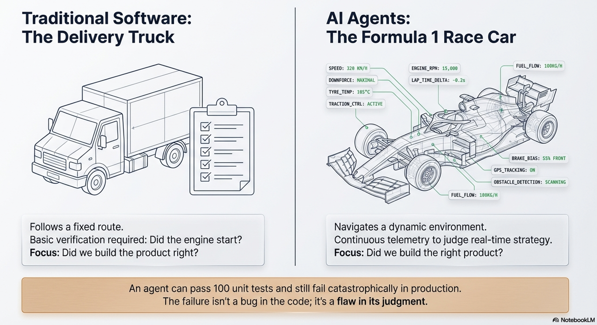
Non-determinism → Identical inputs can produce varying outputs, making traditional breakpoints ineffective for catching “flaws in judgment.”
Warning
⚠️ Pitfall: Treating an agent like a passive model. An agent is a system, not just an algorithm.
💡 Insight: The move from text-out (LLMs) to action-out (Agents) means the primary unit of evaluation is no longer the model, but the entire system trajectory.
Evolution of Complexity:
Traditional ML: Clear metrics like F1-score or RMSE.
Passive LLM: Generative, probabilistic text-in/text-out.
RAG (Retrieval-Augmented Generation): Success depends on retrieval accuracy vs. generation quality.
Active AI Agent: Introduces planning, tool usage, and stateful memory.
Multi-Agent Systems (MAS):
Success depends on unscripted interactions.
⚠️ Pitfall: Systemic Deadlocks or Resource Contention can cause failures that aren’t attributable to any single agent.
You must track both individual agent performance and the stability of the global environment.

Agent Quality
Agent quality must be treated as an architectural pillar rather than a final testing phase. It is measured across a framework of four interconnected pillars:
Pillar |
Metric Type |
Definition |
Business Impact |
|---|---|---|---|
Effectiveness |
Goal Achievement |
Did the agent achieve the user’s actual intent? |
Direct impact on KPIs (e.g., conversion rates). |
Efficiency |
Operational Cost |
The resource cost (tokens, time, steps) of the solution. |
Operational margins and user latency. |
Robustness |
Reliability |
Ability to handle API timeouts, missing data, or ambiguity. |
Graceful degradation and system uptime. |
Safety & Alignment |
Trustworthiness |
Operation within ethical boundaries and security rules. |
Risk mitigation and enterprise trust. |
You cannot measure Efficiency if you don’t count the steps, and you cannot verify Safety if you cannot inspect the reasoning.
Visual explanation
Effectiveness:
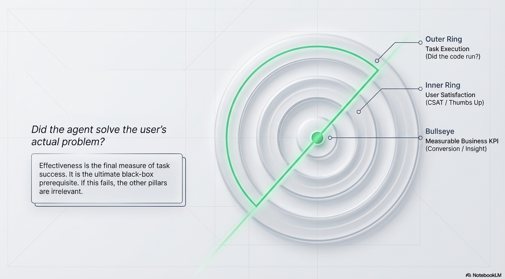
Efficiency:

Robustness:
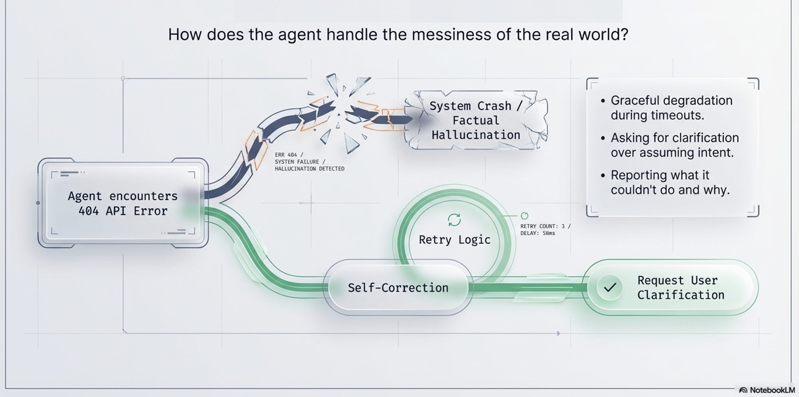
Safety & Alignment:

“Outside-In” evaluation strategy

To assess these pillars, the framework uses an “Outside-In” evaluation strategy. It starts with the “Black Box” view (evaluating the final end-to-end output and user satisfaction). If there is a failure, it moves to the “Glass Box” view (“Inside-Out” View - evaluating the agent’s internal trajectory, including its LLM planning, tool selection, and context handling) to diagnose exactly why it failed.
This judgment process relies on a mix of automated metrics, scalable models evaluating other models (LLM-as-a-Judge and Agent-as-a-Judge), and indispensable Human-in-the-Loop (HITL) evaluators.
The Black Box (End-to-End):
Measures Task Success Rate and User Satisfaction.
If the goal is met, the system is effective.
The Glass Box (Trajectory Evaluation):
If the black box fails, we open the “Glass Box” to inspect the Trajectory.
Note
💡 Insight: The Trajectory is the Truth. Measuring only the final answer hides fatal flaws in reasoning or tool usage.
Glass Box Inspection Points:
Thought: Is the plan logical, or did Context Pollution cause a reasoning loop?
Tool Usage: Did the agent hallucinate tool parameters or call tools unnecessarily?
RAG Performance: ⚠️ Pitfall: The LLM may ignore retrieved context entirely to hallucinate a “plausible” answer.
Observation: Did the agent misinterpret the tool’s output (e.g., ignoring a 404 error)?

Diagnostic Power:
You can’t diagnose a process you can’t see.
Trace provide the visibility of the underlying process or processes.
By analyzing the trace, we move from “the final answer is wrong” to “the answer is wrong because the agent misinterpreted the API’s error response.”
Evaluator Spectrum
The “Outside-In” Evaluation Hierarchy is a top-down strategic framework that prioritizes evaluating an agent’s real-world success before diving into the technical details of its execution.
The Evaluator Spectrum (“The Evaluators”) defines the diverse set of judges required to execute this evaluation, balancing scalable automation with necessary human oversight. This spectrum includes:
Automated Metrics:
Fast, reproducible metrics (like string or embedding similarity) used as a first-pass filter to catch obvious output regressions at scale.
LLM-as-a-Judge:
Using a powerful language model to scalably score qualitative outputs (like helpfulness or correctness) against a defined rubric, often through pairwise comparisons.
Agent-as-a-Judge:
Using a specialized agent to evaluate the process and full execution trace of another agent, assessing intermediate steps like plan logic and tool selection.
Human-in-the-Loop (HITL) and User Feedback:
The indispensable human element needed to interpret complex nuance, apply deep domain expertise, define the “gold standard” benchmarks, and provide real-world satisfaction signals.
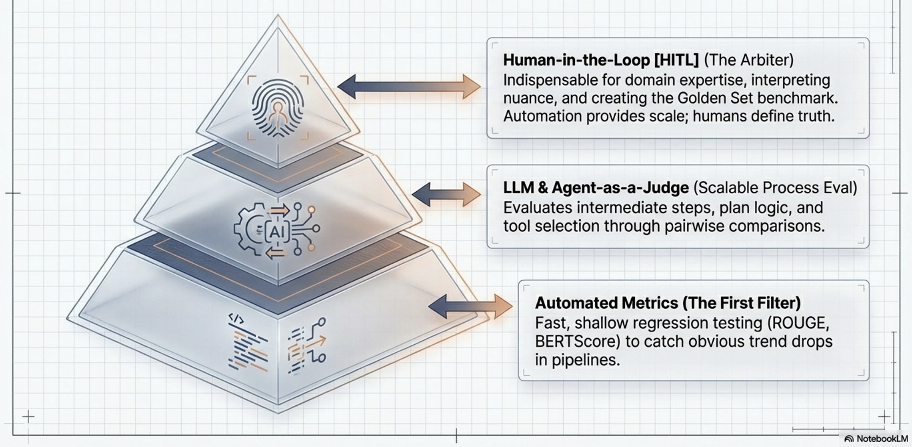
How Evaluators Relate to “Outside-In” evaluation:
The “Outside-In” Hierarchy dictates what to evaluate (final output versus internal trajectory), while the Evaluator Spectrum dictates how to judge it.
For example, the “Black Box” (end-to-end success) is often efficiently measured using basic Automated Metrics and real-world User Feedback. However, when a failure triggers a deeper “Glass Box” (trajectory) analysis, simple metrics fail. Evaluators must then deploy LLM-as-a-Judge, Agent-as-a-Judge, and HITL to accurately critique the nuanced, subjective quality of the agent’s internal reasoning and intermediate steps,,.
Agent Observability
To evaluate a process, you must be able to see it.
Traditional software uses monitoring; agents require Observability.
The kitchen analogy:
traditional software monitoring is like checking if a fast-food line cook followed a rigid, step-by-step recipe.
Agent observability is like a food critic evaluating a gourmet chef’s dynamic decisions, adaptations, and creative process.
Traditional Software |
Agentic AI |
|
|---|---|---|
Metaphor |
The Line Cook: Follows a rigid, laminated recipe perfectly. |
The Gourmet Chef: Dynamically decides the recipe based on ingredients and goals. |
Workflow |
Deterministic: Fixed logic and predictable paths. |
Probabilistic: Emergent behavior via Tool Use and Memory. |
Failure Mode |
System Crash: Explicit errors like NullPointerException. |
Quality Degradation: Silent failures like factual hallucinations or emergent bias. |
QA Method |
Verification: Did we build the product right? |
Validation: Did we build the right product? |

Pillars of Observability:
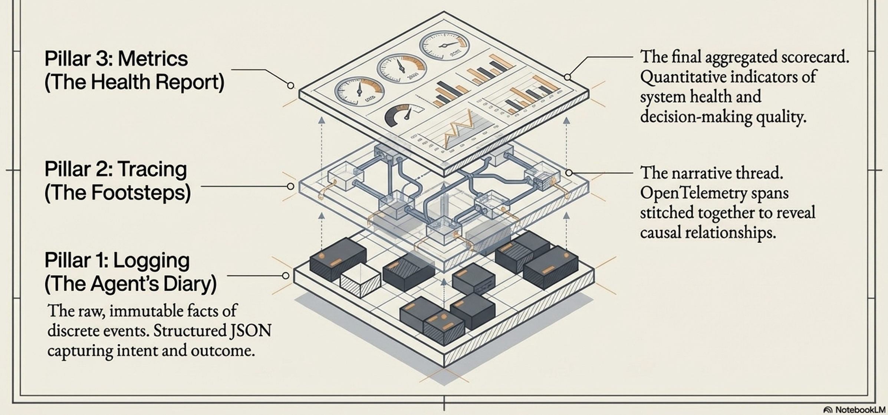
Observability provides the telemetry needed to capture an agent’s “thought process”. Agent observability is built on three foundational pillars:
Logging (The Agent’s Diary)
Structured, timestamped entries that capture raw facts about discrete events, such as the exact prompt sent to the model, the tools invoked, and the raw data received
Effective logging records the agent’s intent before an action, and the outcome after. This separates a failed API attempt from a hallucinated decision not to act
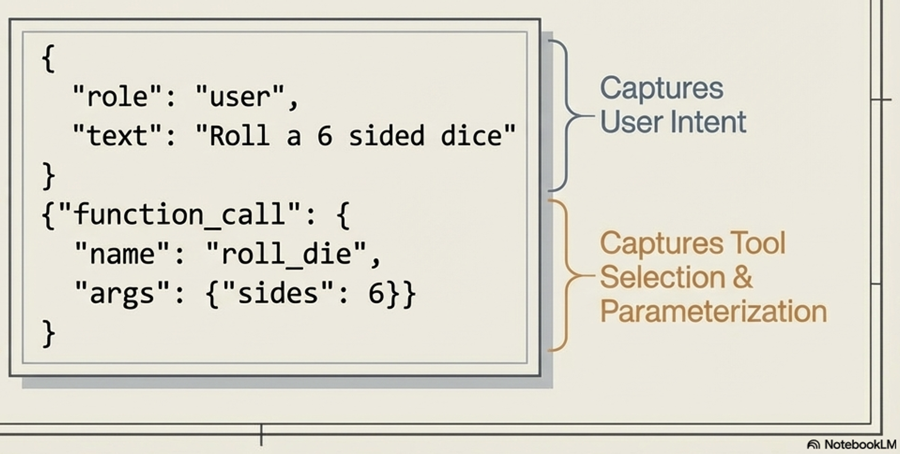
Tracing (Following the Footsteps)
The narrative thread that stitches individual logs together across a single task. Traces reveal the causal relationship between events (e.g., showing that a faulty tool call caused an LLM hallucination, which led to a bad final answer).
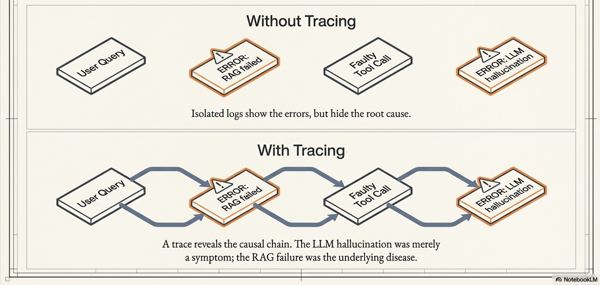
Metrics (The Health Report):
The aggregated scorecard of the agent’s performance over time.
This is divided into System Metrics (direct measurements like latency, error rates, and token costs) and Quality Metrics (evaluative scores like factual correctness, trajectory adherence, and helpfulness)
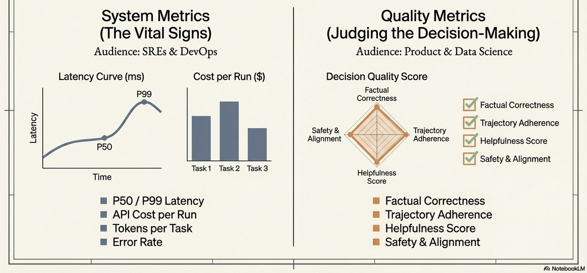
Agent Observability & Quality
Agent observability and agent quality are fundamentally interdependent, operating as a continuous loop where visibility enables judgment, and judgment drives improvement.
Observability - Prerequisite for Quality Evaluation:
A core principle of AI agents is that “you cannot judge a process you cannot see.”
Measuring the four pillars of agent quality (Effectiveness, Efficiency, Robustness, and Safety) is impossible if you only examine the agent’s final output.
For example,
you cannot measure operational efficiency without counting the number of steps an agent took,
you can’t diagnose a robustness failure without knowing exactly which API call timed out
A holistic framework for agent quality demands a holistic architecture for agent visibility.
The Trajectory is the Truth:
Execution trajectory is agent’s end-to-end “thought process”.
The true measure of an agent’s logic, safety, and efficiency lies in its execution trajectory
Observability—specifically through structured logs (the agent’s diary) and end-to-end traces (the narrative thread)—provides the indispensable evidence needed to reconstruct and analyze this trajectory to understand why an agent succeeded or failed.
Transforming Telemetry into Quality Metrics:
Observability supplies the raw data, while the quality evaluation framework provides the judgment.
Quality Metrics (such as factual correctness, trajectory adherence, and safety scores) are not simply raw system data; they are “second-order metrics” derived by applying a judgment layer (like an LLM-as-a-Judge or Human-in-the-loop evaluator) directly on top of the raw logs and traces captured by observability
Evaluatable-by-Design:
Architecture: Because quality depends so heavily on visibility, reliable agents must be built to be “evaluatable-by-design”
This means quality cannot be a final testing phase; instead, agents must be architected from the first line of code with the necessary “telemetry ports” to emit the observability data required for judgment.
Mapping observability to quality
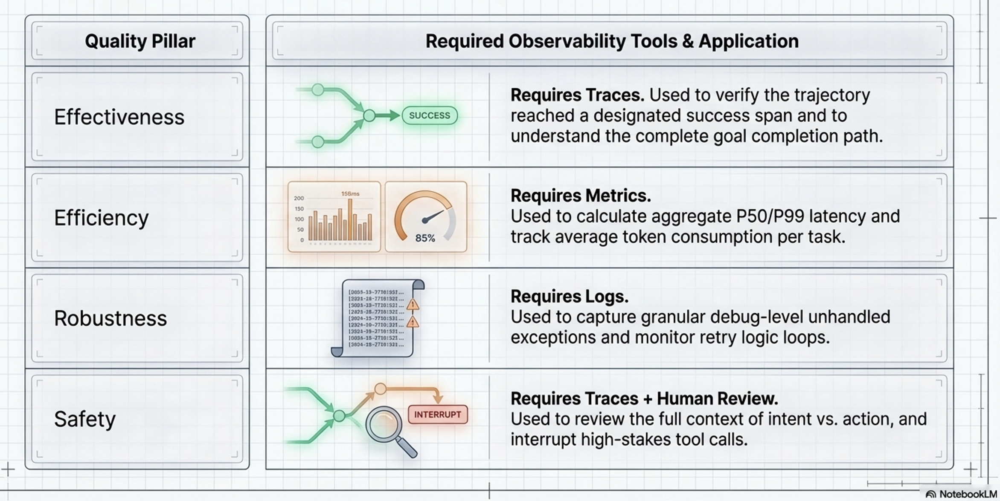
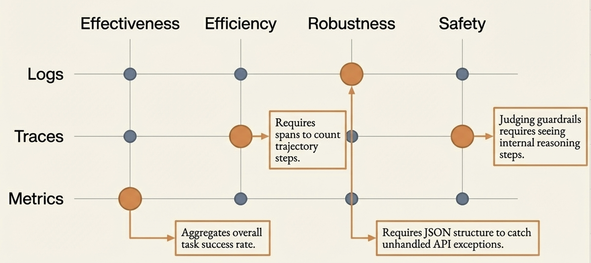
Operationalizing data
Operationalizing data is the critical step that bridges the gap between simply collecting observability data (logs, traces, and metrics) and actually improving an AI agent’s quality. While having this raw data provides the necessary components, operationalizing it means assembling these pieces into a working system that generates real-time actions and insights during live operations.
Linking data to agent quality
Dashboards & Alerting:
Separating System Health from Model Quality
A single dashboard is insufficient for managing an AI agent.
To effectively operationalize data, teams must separate it into two distinct views:
Operational Dashboards:
Used primarily by SREs and DevOps teams, these dashboards track real-time system metrics like P99 latency, error rates, and token consumption. They are used to trigger immediate alerts for system bottlenecks or budget overruns.
Quality Dashboards:
Used by product owners and data scientists, these dashboards track slower-moving quality metrics such as factual correctness, trajectory adherence, and helpfulness ratings. They trigger alerts for subtle degradations in the agent’s logic or output quality, even when the system itself is running perfectly.
Security & PII: Protecting Your Data:
Because logs and traces capture the agent’s “thought process” and user interactions, they often contain Personally Identifiable Information (PII).
Operationalizing this data safely requires implementing a robust PII scrubbing mechanism in the logging pipeline before the data is stored long-term, ensuring privacy and compliance.
Managing the Trade-off: Granularity vs. Overhead:
Capturing highly detailed observability data for every request in a production environment can cause severe latency and overhead. To operationalize data effectively, teams use dynamic sampling. This involves using high-granularity logging (DEBUG) in development, but switching to a lower default (INFO) in production. For example, a system might only trace 10% of successful requests to gather performance metrics, but capture 100% of all errors to preserve the rich diagnostic details needed to debug failures.
The Agent Quality Flywheel
The Agent Quality Flywheel is the ultimate goal of operationalizing data
Agent Quality Flywheel: A continuous improvement loop fed by operationalizing data from agent system.
Flywheel (a structured feedback loop)
Programmatically annotate every operational failure captured by data and
Convert into a permanent regression test in the system’s evaluation set
This ensures that every mistake the agent makes in production is used to make it permanently smarter, continuously driving up its overall quality.

Building Trust
Agent quality in a non-deterministic world

Principles of Trustworthy agents:

Reference
Build ADK Agents with Gemini 3.1 Pro
Objectives
Learn how to use Agent Starter Pack bootstraps high-performance agents in seconds
Explore how the “Template-First” approach allows you to leverage language-specific strengths
Google ADK and ASP
ADK (Agent Development Kit)
A framework designed to give engineers deep control, customizability, and integration capabilities when building complex, mission-critical AI agents. It serves as the foundational architecture for crafting an agent’s reasoning and orchestration logic, providing built-in programmatic abstractions for:
Session and Memory Management
Multi-Agent Orchestration
Security and Observability
The Agent Starter Pack (ASP)
Python package that provides production-ready Generative AI agent templates specifically designed for Google Cloud. If the ADK is the development framework used to write the agent’s core logic (its “brain” and “nervous system”), the Agent Starter Pack acts as the operational wrapper designed to successfully deploy that ADK-built agent into the real world.
Moving an agent from a local prototype to a reliable enterprise system requires significant infrastructure. The ASP positions itself as the “AgentOps” foundation that surrounds your ADK agent with these necessary production services, including:
Automated CI/CD Pipelines
Infrastructure as Code (IaC)
GitOps Workflows
Automated Quality Gates
Use the ADK to build how the agent thinks and acts, and you use the Agent Starter Pack to safely deploy, scale, and monitor that agent in a production environment.
Build first ADK Agent with Gemini 3.1 Pro from scratch
Build Python Agent
Build the Python Agent:
# Python
uvx agent-starter-pack@latest create my-py-agent -a adk@python --adk -s
Terminal:
╭─────────────────────────────────────────────────────────────────────────────────────────────────── Agent Starter Pack v0.39.6 ───────────────────────────────────────────────────────────────────────────────────────────────────╮
│ │
│ ▄▀▄ █▀▀ █▀▄ │ "To production... and beyond!" │
│ █▀█ ▀▀█ █▀▀ │ │
│ ▀ ▀ ▀▀▀ ▀ │ Powered by Google Cloud - Agent Starter Pack │
│ │
╰──────────────────────────────────────────────────────────────────────────────────────────────────────────────────────────────────────────────────────────────────────────────────────────────────────────────────────────────────╯
⚡ ADK quickstart: adk + Agent Engine + prototype mode
Info: --agent 'adk@python' ignored due to --adk flag (using adk).
✅ Success! Your agent project is ready.
📖 Documentation
README: cat my-py-agent/README.md
Dev Guide: https://goo.gle/asp-dev
💡 Tip
Once ready for production, run: uvx agent-starter-pack enhance
🚀 Get Started
cd my-py-agent && make install && make playground
Agent:
.
├── app
│ ├── __init__.py
│ ├── __pycache__
│ │ ├── __init__.cpython-311.pyc
│ │ └── agent.cpython-311.pyc
│ ├── agent_engine_app.py
│ ├── agent.py
│ └── app_utils
│ ├── deploy.py
│ ├── telemetry.py
│ └── typing.py
├── deployment_metadata.json
├── GEMINI.md
├── Makefile
├── pyproject.toml
├── README.md
├── tests
│ ├── eval
│ │ ├── eval_config.json
│ │ └── evalsets
│ │ ├── basic.evalset.json
│ │ └── README.md
│ ├── integration
│ │ ├── test_agent_engine_app.py
│ │ └── test_agent.py
│ └── unit
│ └── test_dummy.py
└── uv.lock
Run Python Agent
Install dependencies using uv and launch local development:
cd my-py-agent && make install && make playground
uv sync
Resolved 251 packages in 9ms
Audited 159 packages in 23ms
===============================================================================
| 🚀 Starting your agent playground... |
| |
| 💡 Try asking: What's the weather in San Francisco? |
| |
| 🔍 IMPORTANT: Select the 'app' folder to interact with your agent. |
===============================================================================
uv run adk web . --port 8501 --reload_agents
...
...
INFO: Started server process [38060]
INFO: Waiting for application startup.
+-----------------------------------------------------------------------------+
| ADK Web Server started |
| |
| For local testing, access at http://127.0.0.1:8501. |
+-----------------------------------------------------------------------------+
INFO: Application startup complete.
INFO: Uvicorn running on http://127.0.0.1:8501 (Press CTRL+C to quit)
Agent via localhost:
Building a BigQuery & Google Maps Agent with Google ADK & MCP
Objectives
Understand how to connect to MCP server and call MCP tools
Uses a real, working BigQuery agent to explore following foundational patterns
MCP Core Pattern
Agent Planner + Tools Pattern
Authentication Patterns for MCP
Tool Composition
What to build
An adk web agent that connects to Google’s fully managed BigQuery and Maps MCP servers, authenticates using Application Default Credentials, and answers natural language questions about data stored in BigQuery
MCP Core Pattern
Note
MCP (Concept):
MCP design separates the AI application from its tool integrations
MCP help create a modular and extensible approach to AI apps and tool development
Core architectural components
MCP Host (AI application)
MCP Server (adapter or a proxy for an external tool, data source, or API)
MCP Client (maintains the active connection with the Server)
Operationalizing MCP
Agent never imports a BigQuery & Google maps Python library directly. Instead, connect to a server that exposes operations as MCP tools
This decouples agent from the data source entirely
Use ADK
McpToolsetto automatically connect, discover, adapt and proxyConnect
Opens a persistent HTTPS connection to the MCP server endpoint using
StreamableHTTPConnectionParams
Discover
Calls
list_toolson the MCP server to get a manifest of all available tools and their input schemasNote: The
list_toolsmethod is an internal function of an MCP server used to advertise its capabilities to an Agent Development Kit (ADK) client. You would not typically call list_tools() directly as an end-user but rather configure your ADK agent to connect to an MCP server, upon which the agent will automatically discover and use the available tools
Adapt
Converts MCP tool schemas into ADK-native BaseTool objects that the
LlmAgentcan use.
Proxy
When the agent calls a tool, McpToolset forwards the call via call_tool and returns the result.
Agent Planner + Tools Pattern
Keep the instruction focused on reasoning strategy, not data
Agent doesn’t hardcode column names or SQL in the instructions
Agent discover schema at runtime via the MCP tools
This makes the agent resilient to schema changes
Authentication Patterns
BigQuery remote MCP (Model Context Protocol) servers use the OAuth 2.0 protocol with Google Cloud Identity and Access Management (IAM) for authentication and authorization
API keys are not supported.
Use Application Default Credentials (ADC) — the Google Cloud standard
gcloud auth application-default login(in terminal)import google.auth.transport.requests(import in agent; used in .refresh())
Tool Composition - Multi-Tool Agents
Composing multiple tool servers enables agent to reason across completely different data domains in a single conversation turn
i.e., Reason using data from BigQuery and Google maps MCP in a single conversation turn
Implementation
Agent
"""
agent.py
--------
Bakery Location Intelligence Agent.
Uses two Google-managed MCP servers:
1. BigQuery MCP — demographic, foot-traffic, pricing, and sales data
2. Maps MCP — place search, routing, and distance calculations
Run with:
cd bakery_agent/ # parent directory of mcp_bakery_app/
adk web .
"""
import os
import dotenv
from mcp_bakery_app import tools
import google.auth
from google.adk.agents import LlmAgent
from google.adk.models import Gemini
from google.genai import types
dotenv.load_dotenv()
# ── Project config ────────────────────────────────────────────────────────────
#PROJECT_ID = os.getenv("GOOGLE_CLOUD_PROJECT", "project_not_set")
DATASET = "mcp_bakery"
_, project_id = google.auth.default()
os.environ["GOOGLE_CLOUD_PROJECT"] = project_id
os.environ["GOOGLE_CLOUD_LOCATION"] = "global"
os.environ["GOOGLE_GENAI_USE_VERTEXAI"] = "True"
# ── Initialise MCP toolsets ───────────────────────────────────────────────────
# Each call connects to the remote MCP server and discovers its tools.
# Toolsets are created once at module load time and reused across requests.
maps_toolset = tools.get_maps_mcp_toolset()
bigquery_toolset = tools.get_bigquery_mcp_toolset()
# ── Agent definition ──────────────────────────────────────────────────────────
root_agent = LlmAgent(
name="root_agent",
model=Gemini(
model="gemini-3-flash-preview",
retry_options=types.HttpRetryOptions(attempts=3),
),
instruction=f"""
You are an expert Bakery Location Intelligence Agent helping an entrepreneur
decide where to open a new bakery in the Los Angeles area.
You have access to two complementary data sources:
━━━━━━━━━━━━━━━━━━━━━━━━━━━━━━━━━━━━━━━━━━━━━━━━━━━━━━━━━
1. BIGQUERY TOOLSET — structured data in the `{DATASET}` dataset
━━━━━━━━━━━━━━━━━━━━━━━━━━━━━━━━━━━━━━━━━━━━━━━━━━━━━━━━━
Run all jobs from project: {project_id}
Always fully qualify table names: `{project_id}.{DATASET}.TABLE_NAME`
Available tables and their purpose:
• demographics — zip_code, neighborhood, median_household_income,
total_population, median_age, bachelors_degree_pct,
foot_traffic_index
• foot_traffic — zip_code, time_of_day (morning/afternoon/evening),
foot_traffic_score
• bakery_prices — store_name, product_type, price, region, is_organic
• sales_history_weekly — week_start_date, store_location, product_type,
quantity_sold, total_revenue
Workflow for BigQuery questions:
1. Use get_dataset_info to confirm the dataset exists.
2. Use get_table_info to inspect schema before writing SQL.
3. Use execute_sql to run SQL and retrieve results.
4. If a query errors, read the error message, fix the SQL, and retry.
━━━━━━━━━━━━━━━━━━━━━━━━━━━━━━━━━━━━━━━━━━━━━━━━━━━━━━━━━
2. MAPS TOOLSET — real-world location intelligence
━━━━━━━━━━━━━━━━━━━━━━━━━━━━━━━━━━━━━━━━━━━━━━━━━━━━━━━━━
Use for:
• Searching for bakeries, cafés, or competitors in a specific area
Find the region with the highest foot traffic and lowest competitor density.
Always include a hyperlink to an interactive Google Maps view in your
response when showing location-based results.
━━━━━━━━━━━━━━━━━━━━━━━━━━━━━━━━━━━━━━━━━━━━━━━━━━━━━━━━━
RESPONSE GUIDELINES
━━━━━━━━━━━━━━━━━━━━━━━━━━━━━━━━━━━━━━━━━━━━━━━━━━━━━━━━━
• Combine data insights with real-world location context in every answer.
• Be specific — cite zip codes, neighbourhoods, dollar amounts, and scores.
• Format numbers clearly: currency as $X.XX, percentages as X.X%.
• When you recommend a location, justify it with at least two data points
from BigQuery AND one real-world observation from Maps.
• Keep responses concise but complete. Use bullet points for comparisons.
""",
tools=[maps_toolset, bigquery_toolset],
)
Tool collection
"""
tools.py
--------
MCP toolset factory functions for the Bakery Location Agent.
Two remote Google-managed MCP servers are used:
- BigQuery MCP : https://bigquery.googleapis.com/mcp
- Maps MCP : https://mapstools.googleapis.com/mcp
Authentication
- BigQuery uses Application Default Credentials (ADC).
Run once before starting the agent:
gcloud auth application-default login
- Maps uses a plain API key injected as an X-Goog-Api-Key header.
Set MAPS_API_KEY in your .env file.
"""
import os
import dotenv
import google.auth
import google.auth.transport.requests
from google.adk.tools.mcp_tool.mcp_toolset import McpToolset
from google.adk.tools.mcp_tool.mcp_session_manager import StreamableHTTPConnectionParams
# ── MCP server endpoints (Google-managed, no infra to run) ──────────────────
BIGQUERY_MCP_URL = "https://bigquery.googleapis.com/mcp"
MAPS_MCP_URL = "https://mapstools.googleapis.com/mcp"
# ── Maps toolset ─────────────────────────────────────────────────────────────
def get_maps_mcp_toolset() -> McpToolset:
"""
Connect to the Google Maps Platform MCP server.
Auth: API key passed as X-Goog-Api-Key header.
The MAPS_API_KEY env var must be set in .env (or the shell environment).
Tools exposed by this server (selection):
"""
dotenv.load_dotenv()
maps_api_key = os.getenv("MAPS_API_KEY", "no_api_key_found")
toolset = McpToolset(
connection_params=StreamableHTTPConnectionParams(
url=MAPS_MCP_URL,
headers={
"x-goog-api-key": maps_api_key,
},
)
)
print("✅ Maps MCP toolset configured (Streamable HTTP).")
return toolset
# ── BigQuery toolset ──────────────────────────────────────────────────────────
def get_bigquery_mcp_toolset() -> McpToolset:
"""
Connect to the Google BigQuery MCP server using Application Default Credentials.
Auth: OAuth 2.0 Bearer token generated from ADC, refreshed on every call
so the agent always starts with a valid token.
Also passes x-goog-user-project so BigQuery bills the correct project.
⚠ Token lifetime is ~60 min. If adk web runs longer, restart the agent
after re-authenticating: gcloud auth application-default login
Tools exposed by this server (selection):
- list_dataset_ids
- get_dataset_info
- list_table_ids
- get_table_info
- execute_sql
"""
credentials, project_id = google.auth.default(
scopes=["https://www.googleapis.com/auth/bigquery"]
)
# Force a refresh so the token is valid at agent startup
credentials.refresh(google.auth.transport.requests.Request())
oauth_token = credentials.token
toolset = McpToolset(
connection_params=StreamableHTTPConnectionParams(
url=BIGQUERY_MCP_URL,
headers={
"Authorization": f"Bearer {oauth_token}",
"x-goog-user-project": project_id,
},
)
)
print("✅ BigQuery MCP toolset configured (Streamable HTTP).")
return toolset
Deployment
uv run adk web . --no-reload
Terminal output:
INFO: Started server process [9643]
INFO: Waiting for application startup.
+-----------------------------------------------------------------------------+
| ADK Web Server started |
| |
| For local testing, access at http://127.0.0.1:8000. |
+-----------------------------------------------------------------------------+
INFO: Application startup complete.
INFO: Uvicorn running on http://127.0.0.1:8000 (Press CTRL+C to quit)
Output
Output
Mastering Context Engineering with Google ADK
This tutorial explores how to move beyond “spaghetti context” by using the Google Agent Development Kit (ADK) patterns found in your Python scripts.
Objectives
Understand how to optimize token usage
by decouple static system instructions from dynamic per-turn directives
Explore how to implement Context Caching
to reduce latency and costs for production-scale agents
What to build
Build a “Steering” Controller that compiles a clean working context for the model.
Integrate Intent-Based Routing to provide targeted goals and corrective feedback at runtime.
Static vs. Dynamic Instruction Separation
Note
Concept:
Traditional LLM apps send the entire system prompt (rules, schemas, safety) with every single turn. This is expensive and slow.
The ADK Solution: Separate Static Instructions from Turn Instructions
Type |
Description |
Changes? |
|---|---|---|
|
Invariant policies, schemas, safety rules, tool definitions - “Laws of the Land.” |
Never (or rarely) |
|
Per-turn goal, style, tenant scope, corrective feedback |
Every turn |
Implementation: static_instruction & instruction
Code snippet
STATIC_POLICY_HEADER = """You are a strict policy assistant...
Follow this exact JSON schema...
Safety: Never provide medical or legal advice..."""
agent = Agent(
name="policy_agent",
static_instruction=STATIC_POLICY_HEADER, # Invariant
instruction="Default: be concise..." # Initial dynamic turn
)
Context Caching
Note
Concept:
Even if you separate instructions, the LLM provider still has to “re-read” the system prompt every time, leading to high latency
ADK Solution:
Use
ContextCacheConfigto tell the infrastructure to keep the static part “warm” in the model’s memory.
Operationalizing Context Caching
Static header is clearly marked as “policy”
ADK can compute KV representation of
static_instructiononce and reuse it across many requests,Pay the full token cost on the first request (and after the TTL expires)
Code snippet
app = App(
name="policy_qa_app",
context_cache_config=ContextCacheConfig(
ttl_seconds=3600, # Keep the static header cached for 1 hour
min_tokens=1000 # Only cache if the prompt is large enough to matter
),
root_agent=agent
)
Engineering Impact:
By caching the 1000+ token policy header, subsequent turns only bill you for the tiny user_message and turn_instruction.
Structured Turn Steering
Note
Concept:
The Problem: Shoveling raw history into the window causes “Lost in the Middle” syndrome. The ADK Solution: Treat the prompt as a rendered view. Use a “Controller” (the SteeringInputs class) to compile a clean set of directives for the current turn only.
Generate “Compiled View” (Steering)
Rather than assembling turn instructions by string concatenation, ADK encourages you to treat turn steering as a typed, structured object
The
SteeringInputsdataclass codifies every knob we might want to adjust at runtimei.e., ADK use a structured
dataclassto represent the “Knobs” we want to turn
Code snippet
@dataclass
class SteeringInputs:
goal: str # Current mission
style: str # Aesthetic/Vibe
max_cites: int # Constraint enforcement
tenant_hint: str # Context filtering (e.g., EU vs US)
corrective: str # Feedback loop for self-correction
The
build_turn_instructionfunction acts as the Compiler, turning these clean variables into a optimized instruction string for the LLMEach field maps directly to a control surface in the final prompt:
Code snippet
def build_turn_instruction(s: SteeringInputs) -> str:
parts = [
f"Goal: {s.goal}",
f"Style: {s.style}",
(
"Constraints: "
f"include at most {s.max_cites} citations; "
"refuse medical/legal advice; "
"if info is missing, ask one targeted question; "
f"return 'confidence' between {s.confidence_range[0]} and {s.confidence_range[1]}."
)
]
if s.tenant_hint:
parts.append(f"Tenant: {s.tenant_hint}")
if s.corrective:
parts.append(f"Correction: {s.corrective}")
return "\n".join(parts)
Intent-Based Routing & Error Correction
Note
Concept:
Agents can ignore instructions if the user message is complex
Analyze the intent before the agent runs, and inject specific corrective feedback if the last turn failed.
The chat function performs “Just-in-Time” context assembly
The chat handler translates raw user input into a structured goal
Structured goal is then fed to
SteeringInputsthrough a lightweight intent router
Code snippet
def route_intent(user_message: str) -> str:
text = user_message.lower()
if "compare" in text: return "compare"
if "list" in text and "control" in text: return "list_controls"
if "summarize" in text: return "summarize"
return "answer"
INTENT_TO_GOAL = {
"summarize": "Summarize ACME-42 in plain English.",
"list_controls": "List mandatory controls from ACME-42 with one-line rationales.",
"compare": "Compare ACME-42 to ISO 27001 at a high level, return a short markdown table inside the JSON 'answer'.",
"answer": "Answer the user directly."
}
def chat(session_id: str, user_message: str):
# 1. Intent Mapping: Clean the goal before the agent sees it
intent = route_intent(user_message)
goal = INTENT_TO_GOAL.get(intent)
# 2. Corrective Steering: If the last turn broke a rule, tell the agent EXPLICITLY
corrective = get_last_validation_error(session_id)
# 3. Compiling the View
turn_instruction = build_turn_instruction(
SteeringInputs(goal=goal, corrective=corrective, ...)
)
# 4. Execution: Update the dynamic window only
agent.instruction = turn_instruction
return agent.run(user_message=user_message)
Insights of intent routing
Without intent routing, you pass the raw user message directly as the goal and rely on the model to infer what format and depth is appropriate
The model may or may not comply
With intent routing, application code — makes that decision explicitly and encodes it as a structured directive
The model’s job is reduced from “figure out what to do and do it well” to “execute this well-defined goal”
That is a much easier task, and it leads to more consistent, cacheable, and debuggable outputs
Implementation
Python Code
# ------------
# app_setup.py
# ------------
# An Example of Static Context Policy
from google.adk.apps import App
from google.adk.agents import Agent
from google.adk.agents.context_cache_config import ContextCacheConfig
STATIC_POLICY_HEADER = """You are a strict policy assistant for internal compliance Q&A.
Follow this exact JSON schema in every response:
{"answer": str, "citations": [str], "confidence": float}
Safety:
- Never provide medical or legal advice; refuse with a brief explanation.
- Never invent policy numbers or sections; ask for the missing reference.
Style:
- Use short sentences.
- Prefer active voice.
- If uncertain, say so and request the missing input.
Tools:
- search: use for public web facts.
- bq: use for internal policy tables (read-only).
"""
agent = Agent(
name="policy_agent",
static_instruction=STATIC_POLICY_HEADER,
instruction="Default: be concise and include at most two citations."
)
app = App(
name="policy_qa_app",
context_cache_config=ContextCacheConfig(
ttl_seconds=3600, # cache the header for 1 hour
cache_intervals=5, # force a refresh every 5 requests (guardrail)
min_tokens=1000 # only cache if header is “worth it”
),
root_agent=agent
)
# ------------
# steering.py
# ------------
# An Example of a runtime controller generating each turn instructions
from dataclasses import dataclass
from typing import Optional, Tuple
@dataclass
class SteeringInputs:
goal: str # this turn’s objective
style: str = "concise" # terse, detailed, crisp, etc.
max_cites: int = 2 # runtime knob
tenant_hint: Optional[str] = None # "Answer for EU employees only"
corrective: Optional[str] = None # "Last reply missed field X; include it"
confidence_range: Tuple[float, float] = (0.6, 0.9)
def build_turn_instruction(s: SteeringInputs) -> str:
parts = [
f"Goal: {s.goal}",
f"Style: {s.style}",
(
"Constraints: "
f"include at most {s.max_cites} citations; "
"refuse medical/legal advice; "
"if info is missing, ask one targeted question; "
f"return 'confidence' between {s.confidence_range[0]} and {s.confidence_range[1]}."
)
]
if s.tenant_hint:
parts.append(f"Tenant: {s.tenant_hint}")
if s.corrective:
parts.append(f"Correction: {s.corrective}")
return "
".join(parts)
# ------------
chat_handler.py
# ------------
# An Example of a chat handler which composes the turn instruction
from steering import SteeringInputs, build_turn_instruction
from google.adk.agents import Agent
# agent imported from app_startup.py
def route_intent(user_message: str) -> str:
text = user_message.lower()
if "compare" in text: return "compare"
if "list" in text and "control" in text: return "list_controls"
if "summarize" in text: return "summarize"
return "answer"
INTENT_TO_GOAL = {
"summarize": "Summarize ACME-42 in plain English.",
"list_controls": "List mandatory controls from ACME-42 with one-line rationales.",
"compare": "Compare ACME-42 to ISO 27001 at a high level, return a short markdown table inside the JSON 'answer'.",
"answer": "Answer the user directly."
}
def chat(session_id: str, user_message: str, ui_style: str | None = None):
intent = route_intent(user_message)
goal = INTENT_TO_GOAL.get(intent, f"Answer the user: {user_message[:120]}")
style = ui_style or get_flag(session_id, "style", default="concise")
max_cites = get_flag(session_id, "max_citations", default=2)
tenant_hint = get_tenant_hint(session_id) # e.g., "EU employees only" or None
corrective = get_last_validation_error(session_id) # None or short string
turn_instruction = build_turn_instruction(
SteeringInputs(
goal=goal,
style=style,
max_cites=max_cites,
tenant_hint=tenant_hint,
corrective=(f"Your last reply failed validation: {corrective}. Fix it this turn." if corrective else None)
)
)
agent.instruction = turn_instruction
response = agent.run(user_message=user_message)
validate_and_record(session_id, response) # optional schema check + feedback
return response
Policy agent in action

Context Caching & Compaction in Google ADK
This tutorial explores how to use the Google Agent Development Kit (ADK) to build production-grade agents that remain fast and cost-effective, even during long-running sessions.
Objectives
Gain an overview of the core problem of long context (context bloat)
Explore how Context Caching & Compaction are implemented via ADK
Explore the main patterns in Context Caching & Compaction
What to build
Policy Compliance Agent:
Imagine an agent designed to answer complex employee questions based on a 10,000-word corporate policy manual.
Context Caching:
Used to store the massive policy manual (the “Static Instruction”) on the server.
Instead of sending those 10,000 words to the LLM on every single turn, the ADK reuses a cached “fingerprint,” drastically reducing latency and costs.
Context Compression:
Is used when the employee enters a long back-and-forth troubleshooting session.
After every 3 turns, the ADK summarizes the previous history into a “compacted event,” ensuring the LLM doesn’t get overwhelmed by “Context Rot” or hit its token limit.
The Core Problem: Context Bloat
In a standard LLM request, every turn sends the entire history back to the model.
Latency: More tokens = slower “Time to First Token.”
Cost: You pay for the same instructions over and over.
Reasoning: Models can “forget” the middle of a massive context (Lost in the Middle).
Pattern: Static Instruction Caching
Note
Concept:
Context Caching allows the model to store a “fingerprint” of a large prefix (like a 50-page manual) so it doesn’t have to re-process it on every turn.
Code snippet
Implementation Pattern:
In your app.py, you configure the ContextCacheConfig. This targets the static_instruction defined in your agent.
# Configuration from your script
context_cache_config = ContextCacheConfig(
min_tokens=2048, # Trigger: Only cache if the manual is > 2k tokens
ttl_seconds=1800, # Persistence: Keep the "fingerprint" for 30 mins
cache_intervals=10 # Rotation: Refresh after 10 uses to ensure freshness
)
min_tokens: Caching has a small overhead. Don’t cache short greetings; only cache “heavy” knowledgettl_seconds: If a user stops chatting, ADK automatically deletes the cache to save resources
Pattern: Sliding Window History Compaction
Note
Concept:
Events Compaction (Compression) is the process of summarizing the last N turns into a single “Memory Event.”
Implementation Pattern:
The EventsCompactionConfig manages the “Live History” of the session.
Code snippet
# Configuration from your script
events_compaction_config = EventsCompactionConfig(
compaction_interval=3, # Frequency: Summarize every 3 turns
overlap_size=1 # Continuity: Keep the very last turn uncompressed
)
How it works (The Sliding Window)
Turns 1-2: Full history is sent.
Turn 3: ADK triggers a background summarization.
Turn 4: Instead of sending Turns 1, 2, and 3, ADK sends:
[Summary of 1-2]+[Full Turn 3 (Overlap)]+[New Query]
The “Overlap” Secret: Setting overlap_size=1 is critical. It ensures the model sees the exact wording of the previous turn, preventing the “robotic” feel that occurs when a conversation is 100% summarized.
Architectural Summary
Feature |
Target |
Key Benefit |
|---|---|---|
Caching |
static_instruction |
Reduces $ (Input Tokens) |
Compaction |
conversation_history |
Maintains Reasoning Speed |
Implementation
Python Code
import os
import google.auth
from google.adk.models import Gemini
from google.genai import types
from google.adk.agents import Agent
from google.adk.apps.app import App, EventsCompactionConfig
from google.adk.agents.context_cache_config import ContextCacheConfig
# This massive string is what we want to cache!
POLICY_MANUAL = """
https://artificialintelligenceact.eu/high-level-summary/
"""
_, project_id = google.auth.default()
os.environ["GOOGLE_CLOUD_PROJECT"] = project_id
os.environ["GOOGLE_CLOUD_LOCATION"] = "global"
os.environ["GOOGLE_GENAI_USE_VERTEXAI"] = "True"
my_agent = Agent(
name="compliance_specialist",
model=Gemini(
model="gemini-3-flash-preview", # swap for gemini-3-flash-preview when GA
retry_options=types.HttpRetryOptions(attempts=3),
),
static_instruction=f"You are a compliance expert. Use this link {POLICY_MANUAL} to access the manual when answering queries",
instruction="Be professional, cite specific sections, and always ask if the user needs further clarification."
)
# Configure the ADK Runtime
app = App(
name='policy_compliance_agent',
root_agent=my_agent,
# 1. Context Caching: Handles the 'Static Instruction' (Policy Manual)
context_cache_config=ContextCacheConfig(
min_tokens=2048, # Only trigger cache for large prompts
ttl_seconds=1800, # Keep the policy manual in cache for 30 mins
cache_intervals=10 # Automatically refresh the cache after 10 turns
),
# 2. Context Compression: Handles the 'Live History' (The Conversation)
events_compaction_config=EventsCompactionConfig(
compaction_interval=3, # Every 3 user turns, summarize the history
overlap_size=1 # Keep the most recent turn in full to maintain flow
)
)
Agent in action
Agent initiation:
First four turns & token count:

Turn |
Total token count |
|---|---|
1 |
1222 |
2 |
1548 |
3 |
2009 |
4 |
1620 |
Implementing Persistent Memory with GoodMem and ADK
This tutorial demonstrates the main reason how agents with persistent memory differ from standard agents. In other words, this help understand how persistent memory allows an agent to recall user information across session when standard agents lose their memory the moment a script ends or a session is cleared.
Objectives
Explores how to enable an AI agent to “remember” user interactions across different sessions
What to build
Policy Compliance Agent with “memory”:
Provide persistent memory to the agent developed in previous tutorial
In previous tutorial, build a Compliance Specialist Agent designed to navigate complex corporate policy manuals. This extends it by using persistent memory to make the agent becomes a personalized advisor that recognizes the user’s specific role and other information within the company
“GoodmemPlugin” for persistent memory
Note
Concept:
Persistent Memory:
Persistent memory in ADK acts as a Semantic Search Engine that runs automatically behind the scenes.
When a user sends a message, the GoodmemPlugin performs the following “Silent Observer” pattern:
Context Retrieval
Context Injection
Personalized Response
Context Retrieval:
Before the LLM generates a response, the plugin takes the user’s current query and searches the GoodMem database for the most semantically similar past interactions.
Context Injection:
The retrieved “memories” (defined by your top_k parameter) are injected into the model’s prompt as “Background Context.”
Personalized Response:
The agent uses its instructions to weigh this history and provide a tailored answer.
Implementation - Persistent memory via GoodMem
Python Code Snippet
# The agent is primed to use the retrieved context
instruction = (
"Use the provided history to see if the user has asked about "
"this policy before or mentioned their specific department."
)
# The plugin handles the retrieval and injection automatically
persistent_memory = GoodmemPlugin(
base_url="http://localhost:8080",
api_key="gm_your_key",
top_k=5 # The '5' most relevant past interactions are fetched
)
How and When Memory is Written
Note
Concept:
Plugin callbacks:
The GoodmemPlugin hooks into the ADK’s execution lifecycle. It does not wait for the end of a session; it writes in real-time using two specific triggers:
After User Message:
Immediately after a user sends a message, the plugin sends that text (and any attached metadata) to the GoodMem server.
After Model Response:
Once the Gemini model finishes generating its reply, the plugin captures that response and pairs it with the user’s prompt in the database.
This ensures that even if the application crashes or the user disconnects mid-conversation, every completed turn of the dialogue is already safely stored in the GoodMem database. These callbacks run during every agent interaction (deterministic), saving all information passed through the agent to memory. The agent doesn’t need to decide when to save or retrieve information.
Goodmem Tools:
GoodMem can provide the model to access GoodMem save and fetch tools:
Tool |
Description |
|---|---|
|
Save text content and file attachments to persistent memory |
|
Search memories using semantic similarity queries |
Agent invoke these tools on demand by the model. Model helps the agent to choose when to save or retrieve information based on the conversation context.
Goodmem Tools: Out of scope for this tutorial
Implementation - Policy Compliance Agent with “memory”
Python Code
import os
import google.auth
from pathlib import Path
from google.genai import types
from dotenv import load_dotenv
from google.adk.agents import Agent
from google.adk.apps.app import App, EventsCompactionConfig
from google.adk.agents.context_cache_config import ContextCacheConfig
from google.adk.models import Gemini
from goodmem_adk import GoodmemPlugin
load_dotenv(dotenv_path=Path(__file__).with_name(".env"))
# 1. Define the Models
# FIX #1: Corrected model name from "gemini-3-flash-preview" (doesn't exist)
# to "gemini-3-flash-preview".
main_model = "gemini-3-flash-preview"
summarization_llm = Gemini(model="gemini-1.5-flash")
_, project_id = google.auth.default()
os.environ["GOOGLE_CLOUD_PROJECT"] = project_id
os.environ["GOOGLE_CLOUD_LOCATION"] = "global"
os.environ["GOOGLE_GENAI_USE_VERTEXAI"] = "True"
# 2. Define the Policy Specialist Agent
POLICY_MANUAL = """URL to the policy is https://artificialintelligenceact.eu/high-level-summary/ """
# 3. Configure Persistent Memory (The 'Goodmem' Plugin)
# This is where the local database lives
PERSIST_PATH = os.path.join(os.getcwd(), "agent_memory")
persistent_memory = GoodmemPlugin(
base_url=os.getenv("GOODMEM_BASE_URL"),
api_key=os.getenv("GOODMEM_API_KEY"),
embedder_id=os.getenv("GOODMEM_EMBEDDER_ID"),
space_id=os.getenv("GOODMEM_SPACE_ID"),
space_name=os.getenv("GOODMEM_SPACE_NAME"),
debug=os.getenv("GOODMEM_DEBUG", "false").lower() in ("1", "true", "yes", "on"),
top_k=5, # Retrieve the 5 most relevant past interactions
)
my_agent = Agent(
name="compliance_specialist",
model=Gemini(
model=main_model,
retry_options=types.HttpRetryOptions(attempts=3),
),
static_instruction=f"You are a compliance expert. Use this manual: {POLICY_MANUAL}",
instruction=(
"You have access to the user's past interaction history via persistent memory. "
"Use this history to provide personalized compliance advice. "
"If they previously mentioned a specific department or role, tailor your citations to them."
)
)
app = App(
name='policy_compliance_memory',
root_agent=my_agent,
# Attach Persistent Memory
plugins=[persistent_memory],
context_cache_config=ContextCacheConfig(
min_tokens=2048,
ttl_seconds=3600, # Keep manual cached for 1 hour
cache_intervals=15
),
events_compaction_config=EventsCompactionConfig(
compaction_interval=20,
overlap_size=5,
)
)
Agent in action
Agent initiation:
ADK_USER_ID="test_admin_01" ADK_SESSION_ID="persistent_logs_01" uv run adk web . --no-reload